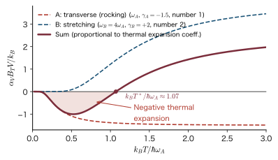
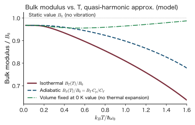
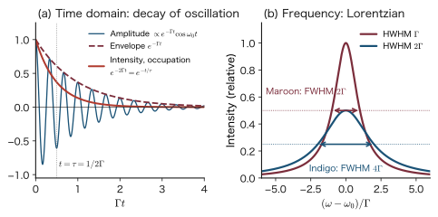
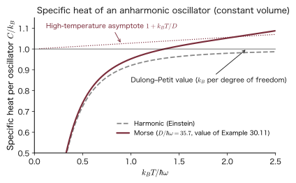
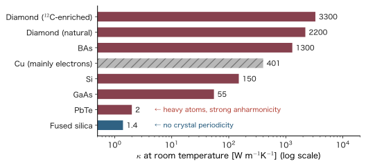
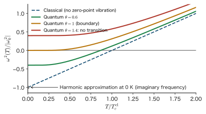

Chapter 30Phonon–Phonon Interaction — Thermal Expansion, Thermal Conduction, and Phonon Lifetimes Arising from Anharmonicity
In Chapters 13–14 we solved for lattice vibrations in the harmonic approximation, in which the spring connecting atoms stores an energy proportional to the square of its extension, and thereby obtained the picture of the phonon as a particle. In a crystal treated in the harmonic approximation, phonons do not interact with one another at all. The wave packets of two phonons pass through each other, and a phonon, once created, lives forever. Yet this idealized crystal shows no thermal expansion, has an infinite thermal conductivity, and gives Raman scattering spectra whose lines have no width. None of this agrees with real crystals. The cause is that we discarded the cubic and quartic terms of the interatomic potential, that is, the anharmonicity.
In this chapter we reread anharmonicity in the quasiparticle language of “phonons collide with one another.” The cubic term produces three-phonon processes, in which one phonon splits into two or two phonons merge into one; the quartic term produces four-phonon processes. From this single picture we derive everything that follows: (i) thermal expansion, the lengthening of a crystal when it is heated (together with negative thermal expansion, since some materials contract); (ii) the finite lifetime after which a phonon disappears, and the linewidth of the spectrum; (iii) the temperature dependence of phonon frequencies; and (iv) the lattice thermal conductivity, which is determined by the scattering of the phonons that carry heat. Finally, as a case in which the anharmonicity is too strong to be treated by perturbation theory, we explain why a high-symmetry structure that has phonons with imaginary frequencies in a 0 K calculation can nevertheless exist stably at high temperature.
In this chapter we use Feynman diagrams (tadpole, loop, bubble) as pictures representing a process, but every calculation is done only with the tools of Part III and of quantum mechanics: force balance, second-order perturbation theory, Fermi's golden rule, and thermal averages. We do not use linear response theory (Green's functions). For readers who want to learn more about calculations with diagrams, we point out at the relevant places the corresponding passages of the companion volume “Introduction to Linear Response Theory” and the explanation pages of the simulators.
Let us describe the connections with the neighboring chapters. Sections 14.6–14.7 of Chapter 14 have already given elementary explanations of the Grüneisen relation and of the thermal conductivity from kinetic theory of gases. This chapter takes them as its starting point, restates the main points without repeating the same derivations, and goes on to the idea of modern first-principles calculations, which compute the thermal conductivity from the lifetime of each mode. Creation and annihilation operators, how to read Feynman diagrams, and the self-energy (the shift of the energy and the lifetime) were prepared in Sections 27.4–27.5 of Chapter 27. However, the quartic vertex ■ used in this chapter, the diagrams with a loop attached (tadpole, loop), and the diagram in which two vertices are joined by two lines (bubble) do not appear in Chapter 27. We explain them from scratch, in pictures and in words, in Sections 30.2.2 and 30.3.3. Whereas the electron–phonon interaction (Chapter 29) treated phonons as the cloud of an electron, this chapter treats the interaction of phonons with one another. In the next chapter, Chapter 31, we proceed to excitons and polarons, in which an electronic excitation is coupled to a distortion of the lattice.
- The seven things that hold in the harmonic approximation (no thermal expansion, infinite thermal conductivity, zero linewidth, a high-temperature specific heat that stays at $3Nk_B$, and so on), and the anharmonic terms that resolve them
- The expansion of the potential $\tfrac12\Phi^{(2)}u^2+\tfrac1{3!}\Phi^{(3)}u^3+\tfrac1{4!}\Phi^{(4)}u^4$, the three-phonon and four-phonon processes (splitting and merging), the conservation laws of energy and crystal momentum, and N processes and U processes
- Deriving the mean position $\langle x\rangle=\frac{3g}{2c}\langle x^2\rangle$ of an anharmonic oscillator from force balance, and understanding the expansion due to zero-point vibration and its freeze-out at low temperature; this is what is inside the tadpole diagram
- Rereading the Grüneisen relation $\alpha_V=\gamma C_V/B_TV$ from the free energy in the quasi-harmonic approximation, and learning the relation between the mode Grüneisen constant $\gamma_{\qq\nu}$ and the third-order force constants, and the mechanism of negative thermal expansion
- Deriving the linewidth $\Gamma$ of the three-phonon process with Fermi's golden rule, and understanding the meaning of the factors $1+n_1+n_2$ and $n_1-n_2$, and learning to use Klemens's formula $\Gamma(T)=\Gamma_0[1+2n(\omega_0/2)]$ and the conversion between linewidth and lifetime $\tau=1/2\Gamma$
- Computing, in a one-degree-of-freedom model, the two reasons why frequencies decrease with temperature (the change in volume, and the anharmonicity at constant volume) as the roles of the loop, bubble, and tadpole
- Deriving $\kappa=\frac1{3V}\sum C_{\qq\nu}v_{\qq\nu}^2\tau_{\qq\nu}$ in the relaxation-time approximation of the Boltzmann equation, and learning the peak of $\kappa(T)$, design guidelines for materials with high and low thermal conductivity, and the procedure of first-principles calculations
- Deriving $\omega^2(T)=\omega_0^2+\Phi^{(4)}\langle u^2\rangle_T/2M$ from the mean-field treatment of the quartic term, and understanding $\omega^2\propto T-T_c$ of the soft mode, quantum paraelectrics, and the idea of self-consistent phonons
30.1 Limits of the Harmonic Approximation
30.1.1 What the harmonic approximation implies
If we truncate the potential at second order in the atomic displacement $u$, the motion of the crystal becomes a collection of mutually independent harmonic oscillators (normal modes) (Chapter 13). The energy levels of each mode are $\hbar\omega_{\qq\nu}(n+\tfrac12)$, and the phonon number $n$ is a constant of the motion. From this property of being “a collection of independent oscillators,” the following seven things, which do not hold in real crystals, follow exactly (Figure 30.1).
- There is no thermal expansion. In a parabolic well, the center of the vibration does not move however large the vibration is. The volume dependence of the free energy is also independent of temperature (the proof in Chapter 14, Section 14.6.2).
- The thermal conductivity is infinite. Phonons do not scatter from one another, so in a perfect crystal they keep running without stopping (Chapter 14, Section 14.7.2).
- The frequency depends on neither temperature nor volume. Since the force constant $\Phi^{(2)}$ is a constant, $\omega_{\qq\nu}$ takes a fixed value.
- The linewidth is 0 (the lifetime is infinite). Since a normal mode is an exact eigenstate, the phonon peak seen in Raman scattering or neutron scattering is a $\delta$ function with no width.
- The specific heat at constant pressure equals the specific heat at constant volume. Since the volume does not change with temperature, $C_p=C_V$ (Example 30.1 below).
- The high-temperature specific heat never departs from the Dulong–Petit value $3Nk_B$. The classical mean energy of each mode is exactly $k_BT$.
- The adiabatic and isothermal elastic constants are equal. For example, the ratio of the adiabatic bulk modulus $B_S$ to the isothermal bulk modulus $B_T$ equals $C_p/C_V$ (a general thermodynamic relation), so for the same reason as in item 5 it is 1. There is also no temperature change of the elastic constants.
In real crystals, all of these are violated. Cu lengthens, for each 1 K of warming at room temperature, by a factor of $1.65\times10^{-5}$ of its length. The thermal conductivity of an insulator is finite; for Si at room temperature it is about $150\,\mathrm{W\,m^{-1}K^{-1}}$. The Raman line of the optical phonon of Si has a full width at half maximum of about $3\,\mathrm{cm^{-1}}$ at room temperature, and it broadens and shifts to lower wavenumbers as the temperature is raised. The specific heat at constant pressure is larger than that at constant volume by a few percent. All of these arise from the terms of third and higher order in the potential (the anharmonic terms). Table 30.1 summarizes how each section of this chapter resolves each of them.
| Consequence of the harmonic approximation | Reality | Responsible anharmonic term | Section |
|---|---|---|---|
| No thermal expansion | $\alpha\sim10^{-5}\,\mathrm{K^{-1}}$ (negative for some materials) | Cubic (shift of the mean position) | 30.3, 30.4 |
| Infinite thermal conductivity | Finite, with a peak in $\kappa(T)$ | Cubic (Umklapp process) + defects and boundaries | 30.7 |
| Frequency independent of temperature | Usually decreases on warming | Cubic in second order, quartic in first order | 30.6, 30.8 |
| Linewidth 0 | Lifetime of the order of ps | Cubic (splitting and merging), quartic | 30.5 |
| $C_p=C_V$ | $C_p-C_V=\alpha_V^2B_TVT$ | Cubic (through thermal expansion) | 30.1 (Example 30.1), 30.4 |
| High-temperature specific heat stays at $3Nk_B$ | Deviates from $3Nk_B$ in proportion to $T$ | Cubic in second order, quartic in first order | 30.6 (Section 30.6.4; determined by the same anharmonic terms as the frequency shift) |
| $B_S=B_T$, elastic constants independent of temperature | $B_S/B_T=C_p/C_V$, softening at high temperatures | Cubic (thermal expansion), quartic | 30.1 (Example 30.1), 30.4 (Section 30.4.6) |
The effects of anharmonicity are often “small corrections,” with frequency shifts and linewidths of the order of $10^{-3}$–$10^{-2}$ of the frequency itself. That is exactly why perturbation theory can be used (Sections 30.2–30.7). There are, however, cases in which the anharmonicity is too strong to be treated by perturbation theory: a structure in which a phonon with an imaginary frequency appears in the harmonic approximation at 0 K, but which exists stably at high temperatures (Section 30.8).
Notation: Symbols used in this chapter, and correspondence with Chapters 14 and 27 and the companion volume
- Thermal conductivity is written $\kappa$ (the $K$ of Chapter 14). In this chapter we do not use $\kappa$ for the extinction coefficient or the GL parameter. The Debye temperature is $\Theta_D$ (the $\theta_D$ of Chapter 14), the bulk modulus is $B_T$ (isothermal; the $B$ of Chapter 14), and the adiabatic bulk modulus is $B_S$.
- An anharmonic oscillator with one degree of freedom is written $U(x)=cx^2-gx^3+fx^4$ ($c=\tfrac12M\omega^2$; $g\gt0$ is the cubic coefficient that makes the stretched side gentle, and $f$ is the quartic coefficient). The sign of $f$ is opposite to that in $cx^2-gx^3-fx^4$ of Chapter 14, Section 14.6.2 ($f\gt0$ in this chapter is the direction in which “the oscillator stiffens at large amplitude”).
- Correspondence with Chapter 27: Example 27.2 of Chapter 27 (Section 27.1) and Example 27.7 (Section 27.3) wrote the same oscillator as $U=\tfrac12Ku^2-bu^3$ ($K$ is the spring constant and $b$ is the cubic coefficient). These correspond to the symbols of this chapter by $K=2c$, $b=g$, $u=x$. For example, $\langle u\rangle=3bk_BT/K^2$ in Example 27.7 is the same equation as $\langle x\rangle=3gk_BT/4c^2$ in this chapter. In this chapter we use $g$ for the cubic coefficient of the one-degree-of-freedom oscillator, but it is distinct from the $g$ of the electron–phonon coupling in Chapter 29.
- The linewidth $\Gamma$ is the half width at half maximum measured in angular frequency (unit $\mathrm{s^{-1}}$). The amplitude decays as $\ee^{-\Gamma t}$ and the phonon number (intensity) as $\ee^{-2\Gamma t}$; the lifetime is $\tau=1/2\Gamma$ and the full width at half maximum is $2\Gamma$. Chapter 27, Section 27.5 wrote $\Gamma$ for the half width at half maximum measured in energy ($\tau=\hbar/2\Gamma$). The $\Gamma$ of Chapter 27 corresponds to $\hbar\Gamma$ of this chapter. The half width at half maximum in angular frequency, $\gamma=\Gamma/\hbar$ ($\tau=1/2\gamma$), in Table 27.4 of Chapter 27 is exactly the $\Gamma$ of this chapter (since we use $\gamma$ for the Grüneisen constant here, we use $\Gamma$ for the linewidth).
- The Bose distribution is $n(\omega)=1/(\ee^{\hbar\omega/k_BT}-1)$. The value for the mode $\lambda=(\qq,\nu)$ is abbreviated $n_\lambda$, and $n_1=n(\omega_1)$ and so on.
- In Chapter 14 of the companion volume “Introduction to Linear Response Theory” and in the explanation page of the simulator, the frequency before the anharmonic terms are included is written $\omega$ and that after is written $\Omega$. Chapter 29 of this book (the Kohn anomaly), by contrast, writes $\Omega_q$ before and $\omega_q$ after. This chapter does not use $\Omega$ and writes the shift as $\Delta\omega$.
30.1.2 The difference between the specific heats at constant pressure and constant volume
The fifth entry of Table 30.1 arises automatically whenever there is thermal expansion. Let us compute the difference using thermodynamics alone.
Example 30.1: $C_p-C_V=\alpha_V^2B_TVT$ — What percentage is it in Cu?
(1) Derive $C_p-C_V=\alpha_V^2B_TVT$ from thermodynamic relations. Here $\alpha_V=\frac1V(\partial V/\partial T)_P$ is the volumetric thermal expansion coefficient and $B_T=-V(\partial P/\partial V)_T$ is the isothermal bulk modulus. (2) Using the room-temperature values for Cu (linear expansion coefficient $\alpha=16.5\times10^{-6}\,\mathrm{K^{-1}}$, $B_T=137\,\mathrm{GPa}$, molar volume $7.11\times10^{-6}\,\mathrm{m^3/mol}$, $C_V\simeq24.5\,\mathrm{J\,mol^{-1}K^{-1}}$; the same values as in Example 14.6 of Chapter 14), find what percentage of $C_V$ the difference is.
Solution. (1) Regarding the entropy as a function of $T$ and $V$, we take the total differential:
$$ \dd S=\left(\frac{\partial S}{\partial T}\right)_V\dd T+\left(\frac{\partial S}{\partial V}\right)_T\dd V $$Dividing by $\dd T$ for a change at constant pressure gives
$$ \left(\frac{\partial S}{\partial T}\right)_P=\left(\frac{\partial S}{\partial T}\right)_V+\left(\frac{\partial S}{\partial V}\right)_T\left(\frac{\partial V}{\partial T}\right)_P $$Multiplying both sides by $T$, and using $C_p=T(\partial S/\partial T)_P$ and $C_V=T(\partial S/\partial T)_V$, we obtain
$$ C_p-C_V=T\left(\frac{\partial S}{\partial V}\right)_T\left(\frac{\partial V}{\partial T}\right)_P $$From $\dd F=-S\dd T-P\dd V$ for the Helmholtz free energy $F$, interchanging the order of the second derivatives gives the Maxwell relation $(\partial S/\partial V)_T=(\partial P/\partial T)_V$. Furthermore, solving the triple-product relation $(\partial V/\partial T)_P=-(\partial P/\partial T)_V/(\partial P/\partial V)_T$ of Section 14.6.4 in Chapter 14 for $(\partial P/\partial T)_V$ gives
$$ \left(\frac{\partial P}{\partial T}\right)_V=-\left(\frac{\partial P}{\partial V}\right)_T\left(\frac{\partial V}{\partial T}\right)_P=\frac{B_T}{V}\cdot V\alpha_V=\alpha_VB_T $$Substituting these, we find
$$ C_p-C_V=T\cdot\alpha_VB_T\cdot V\alpha_V=\alpha_V^2B_TVT $$(2) Since the crystal is isotropic, $\alpha_V=3\alpha=4.95\times10^{-5}\,\mathrm{K^{-1}}$. Per mole,
$$ C_p-C_V=(4.95\times10^{-5})^2\times1.37\times10^{11}\times7.11\times10^{-6}\times300\,\mathrm{J\,mol^{-1}K^{-1}}=0.716\,\mathrm{J\,mol^{-1}K^{-1}} $$($2.45\times10^{-9}\times1.37\times10^{11}=336$, $\times7.11\times10^{-6}=2.39\times10^{-3}$, $\times300=0.716$.) The ratio to $C_V$ is $0.716/24.5=2.9\,\%$.
∎ In the harmonic approximation $\alpha_V=0$, so the difference is zero. The specific heat measured in experiments is usually $C_p$, so when comparing with the Debye model ($C_V$), a correction of a few percent is needed at room temperature. Using the Grüneisen constant $\gamma=\alpha_VB_TV/C_V$ (Section 30.4), we can write $C_p/C_V=1+\alpha_V\gamma T$, and for Cu $1+4.95\times10^{-5}\times1.97\times300=1.029$ gives the same value. This ratio is also exactly $B_S/B_T$.
Why? The anharmonic correction grows larger at higher temperatures
The anharmonic terms are cubic and quartic in the displacement, so they matter more the larger the mean-square atomic displacement $\langle u^2\rangle$ is. At classical high temperatures, the equipartition theorem gives $\langle u^2\rangle\propto k_BT$, so the corrections that are second order in the cubic term and first order in the quartic term (both proportional to $\langle u^2\rangle$) grow in proportion to the temperature. The same reason explains why the high-temperature specific heat deviates from $3Nk_B$ in proportion to $T$, why the frequencies shift in proportion to the temperature (Section 30.6), and why the linewidth broadens in proportion to the temperature (Section 30.5). Conversely, at low temperatures the vibrations saturate at the zero-point vibration $\langle u^2\rangle_0$, and only the anharmonic effect due to the zero-point vibration remains.
30.2 The Anharmonic Potential and Phonon Collisions
30.2.1 Expanding the atomic pair potential
First consider a single bond. Let $r$ be the distance between the two atoms, $r_0$ the equilibrium distance, and $u=r-r_0$ the stretch (displacement), and expand the potential $V(r)$ in a Taylor series in $u$:
There is no first-order term, because the force vanishes at the equilibrium position. $\Phi^{(2)}$ is the spring constant, and keeping only this term is the harmonic approximation. $\Phi^{(3)}$ and $\Phi^{(4)}$ are called the cubic and quartic force constants. In a crystal they carry indices such as the $\alpha$ component of atom $l$, becoming $\Phi^{(3)}_{l\alpha,l'\beta,l''\gamma}$ (Section 27.3.3 of Chapter 27).
Let us look at two actual forms of the interatomic potential. One is the Lennard-Jones potential $V=4\varepsilon[(\sigma/r)^{12}-(\sigma/r)^6]$, which describes crystals of noble gases well; the other is the Morse potential $V=D(1-\ee^{-\alpha u})^2$, often used as a model of covalent and metallic bonds ($\varepsilon$ and $D$ are bond energies, and $\sigma$ and $\alpha$ are length parameters). In both, bringing the atoms closer makes the potential rise steeply because of the strong repulsion due to the Pauli exclusion principle, while pulling them apart breaks the bond and the potential gradually flattens out. This asymmetry appears as $\Phi^{(3)}\lt0$ (Figure 30.2), because $-\Phi^{(3)}u^3/6$ lowers the potential for $u\gt0$ (the stretched side) and raises it for $u\lt0$ (the contracted side).
![(a) The Lennard-Jones potential and its expansions up to second, third, and fourth order. The horizontal axis is the stretch divided by r0, and the vertical axis is the potential divided by the bond energy. The exact potential rises steeply on the contracted side and is gentle on the stretched side. The expansion up to second order is a symmetric parabola, the expansion up to third order is lowered on the stretched side, and the expansion up to fourth order reproduces the shape near equilibrium well. (b) The restoring force compared after normalizing by the harmonic slope. On the contracted side the restoring force pushing back is much stronger than the harmonic one, and on the stretched side the force pulling back is weaker than the harmonic one](figs/ch30_fig30-2.svg)
Example 30.2: Force constants of the Morse and Lennard-Jones potentials
(1) Find $\Phi^{(2)}$, $\Phi^{(3)}$, and $\Phi^{(4)}$ of the Morse potential $V=D(1-\ee^{-\alpha u})^2$. (2) For the Lennard-Jones potential, find $\Phi^{(2)}$, $\Phi^{(3)}$, and $\Phi^{(4)}$, taking $r_0=2^{1/6}\sigma$ as the unit of length. (3) For solid Ar ($\varepsilon\simeq10.3\,\mathrm{meV}$, $\sigma\simeq3.40\,\text{Å}$), find $\Phi^{(2)}$ in $\mathrm{N/m}$, and compare the dimensionless ratio $\abs{\Phi^{(3)}}r_0/\Phi^{(2)}$ with that of the Morse potential.
Solution. (1) Let $y=\alpha u$ and use $\ee^{-y}=1-y+\tfrac{y^2}{2}-\tfrac{y^3}{6}+\tfrac{y^4}{24}-\cdots$. Squaring $1-\ee^{-y}=y-\tfrac{y^2}{2}+\tfrac{y^3}{6}-\cdots$ and keeping terms through $y^4$, we obtain
$$ (1-\ee^{-y})^2=y^2-2\cdot y\cdot\frac{y^2}{2}+\left[\Bigl(\frac{y^2}{2}\Bigr)^2+2\cdot y\cdot\frac{y^3}{6}\right]+\cdots=y^2-y^3+\frac{7}{12}y^4-\cdots $$(The coefficient of $y^4$ is $\tfrac14+\tfrac13=\tfrac7{12}$.) Comparing coefficients with Eq. \eqref{eq:30-expand}, we have $\tfrac12\Phi^{(2)}=D\alpha^2$, $\tfrac16\Phi^{(3)}=-D\alpha^3$, and $\tfrac1{24}\Phi^{(4)}=\tfrac7{12}D\alpha^4$, so that
$$ \Phi^{(2)}=2D\alpha^2,\qquad\Phi^{(3)}=-6D\alpha^3,\qquad\Phi^{(4)}=14D\alpha^4 $$(2) Taking $r_0$ as the unit, $V=\varepsilon(r^{-12}-2r^{-6})$ (obtained by substituting $\sigma^6=r_0^6/2$ into $4\varepsilon[(\sigma/r)^{12}-(\sigma/r)^6]$). Since the $k$th derivative of $r^{-n}$ is $(-1)^kn(n+1)\cdots(n+k-1)r^{-n-k}$, at $r=1$ we have
$$ \begin{aligned} \Phi^{(2)}&=\varepsilon(12\cdot13-2\cdot6\cdot7)=\varepsilon(156-84)=72\varepsilon\\ \Phi^{(3)}&=-\varepsilon(12\cdot13\cdot14-2\cdot6\cdot7\cdot8)=-\varepsilon(2184-672)=-1512\varepsilon\\ \Phi^{(4)}&=\varepsilon(12\cdot13\cdot14\cdot15-2\cdot6\cdot7\cdot8\cdot9)=\varepsilon(32760-6048)=26712\varepsilon \end{aligned} $$(In each case this is the value divided by the corresponding power of $r_0$.) (3) Since $r_0=2^{1/6}\times3.40\,\text{Å}=3.82\,\text{Å}$,
$$ \Phi^{(2)}=\frac{72\times10.3\times10^{-3}\times1.602\times10^{-19}\,\mathrm{J}}{(3.82\times10^{-10}\,\mathrm{m})^2}=0.816\,\mathrm{N/m} $$The ratio is $1512/72=21$ for Lennard-Jones and $6D\alpha^3r_0/2D\alpha^2=3\alpha r_0$ for Morse. For one example of Morse parameters for Cu ($\alpha=1.36\,\text{Å}^{-1}$, $r_0=2.87\,\text{Å}$), $3\alpha r_0=11.7$.
∎ The cubic force constant is negative, and the dimensionless ratio has a magnitude of 10 to 20. The reason the anharmonic effect is small despite such a large ratio is that the displacement $u$ it multiplies is only a few percent of $r_0$ (Section 30.2.4). The value $\Phi^{(2)}\simeq0.8\,\mathrm{N/m}$ for Ar is much smaller than that of covalent bonds (tens to hundreds of $\mathrm{N/m}$), consistent with noble-gas crystals being soft and having low melting points.
30.2.2 Reading the anharmonic terms in the language of phonons — three-phonon and four-phonon processes
As we saw in Chapter 27, Section 27.4, the displacement can be written as a sum of creation and annihilation operators. For one degree of freedom (mass $M$, frequency $\omega$),
$$ x=x_0\,(a+a^\dagger),\qquad x_0\equiv\sqrt{\frac{\hbar}{2M\omega}} $$($x_0$ is the amplitude of the zero-point vibration; $\langle0|x^2|0\rangle=x_0^2$). Substituting this into the cubic term gives
$$ x^3=x_0^3\,(a+a^\dagger)^3=x_0^3\bigl[a^{\dagger3}+(a^{\dagger2}a+a^\dagger aa^\dagger+aa^{\dagger2})+(a^\dagger a^2+aa^\dagger a+a^2a^\dagger)+a^3\bigr] $$which lists a term creating three phonons, terms creating two and annihilating one, terms creating one and annihilating two, and a term annihilating three. The anharmonic terms change the number of phonons. This is the true nature of the “collisions between phonons.” In a crystal, we denote the wave vector $\qq$ and branch $\nu$ together as $\lambda=(\qq,\nu)$ and write $-\lambda=(-\qq,\nu)$; defining $A_\lambda\equiv a_\lambda+a^\dagger_{-\lambda}$, the cubic term takes the following form. Let us note the sign of the indices: replacing $\lambda$ in the definition by $-\lambda$ gives $A_{-\lambda}=a_{-\lambda}+a^\dagger_{\lambda}$. That is, $A_\lambda$ is an operator that “annihilates one phonon of wave vector $\qq$” or “creates one phonon of wave vector $-\qq$,” and in either case it reduces the crystal momentum by $\hbar\qq$. The creation of a phonon of wave vector $\qq_1$ is the $a^\dagger_{\lambda_1}$ contained in $A_{-\lambda_1}$.
Derivation: Writing the cubic term in terms of phonon operators (one atom per unit cell)
Step 1: Substitute the displacement. We substitute the equation of Chapter 27 for the displacement of atom $l$, $\uu_l=\sum_\lambda\sqrt{\hbar/2NM\omega_\lambda}\,\bm e_\lambda A_\lambda\,\ee^{i\qq\cdot\RR_l}$, into the cubic term $U_3=\frac1{3!}\sum\Phi^{(3)}_{l\alpha,l'\beta,l''\gamma}u_{l\alpha}u_{l'\beta}u_{l''\gamma}$:
$$ U_3=\frac1{3!}\sum_{\lambda_1\lambda_2\lambda_3}\Biggl[\sum_{ll'l''}\Phi^{(3)}_{l\alpha,l'\beta,l''\gamma}e_{1\alpha}e_{2\beta}e_{3\gamma}\,\ee^{i(\qq_1\cdot\RR_l+\qq_2\cdot\RR_{l'}+\qq_3\cdot\RR_{l''})}\Biggr]\prod_{i=1}^3\sqrt{\frac{\hbar}{2NM\omega_i}}\;A_{\lambda_1}A_{\lambda_2}A_{\lambda_3} $$(Sums are also taken over $\alpha,\beta,\gamma$.)
Step 2: Translational symmetry. $\Phi^{(3)}$ does not change when all three atoms are shifted by the same lattice vector $\TT$. We therefore write $\RR_{l'}=\RR_l+\bm r'$ and $\RR_{l''}=\RR_l+\bm r''$ and carry out the sum over $l$ first, which yields $\sum_l\ee^{i(\qq_1+\qq_2+\qq_3)\cdot\RR_l}$. This equals $N$ when $\qq_1+\qq_2+\qq_3$ is equal to a reciprocal lattice vector $\GG$, and 0 otherwise (Chapter 13).
Step 3: Collect the terms. Writing the remaining sum as
$$ \tilde\Phi^{(3)}(\lambda_1,\lambda_2,\lambda_3)\equiv\sum_{\bm r',\bm r''}\Phi^{(3)}_{0\alpha,\bm r'\beta,\bm r''\gamma}e_{1\alpha}e_{2\beta}e_{3\gamma}\ee^{i(\qq_2\cdot\bm r'+\qq_3\cdot\bm r'')} $$we obtain
∎ Here $\Delta$ is 1 when its argument is 0 and 0 otherwise. $\Psi$ has the dimension of energy and is the vertex strength connecting the three phonons. Although the factor $1/\sqrt N$ appears, the sum over wave vectors contains $N$ terms, so the rate at which a phonon decays (Section 30.5) is a finite value independent of $N$. By the same procedure, the quartic term can be written as $\frac1{4!}\sum\Psi^{(4)}A_{\lambda_1}A_{\lambda_2}A_{\lambda_3}A_{\lambda_4}$ ($\Psi^{(4)}\propto\tilde\Phi^{(4)}/N$).
When we expand the product of $A_\lambda=a_\lambda+a^\dagger_{-\lambda}$, the term $a_{\lambda}a^\dagger_{\lambda_1}a^\dagger_{\lambda_2}$, for example, arises from $A_\lambda A_{-\lambda_1}A_{-\lambda_2}$. This is the process in which “one phonon $\lambda$ is annihilated and one each of $\lambda_1$ and $\lambda_2$ is created,” that is, a process in which one phonon splits into two. The term $a_{\lambda}a_{\lambda_1}a^\dagger_{\lambda_2}$ is a process in which two phonons merge into one. These are called three-phonon processes. The quartic term gives rise to four-phonon processes such as two → two and one → three. In a Feynman diagram, phonons are drawn as wavy lines, the cubic vertex as a black circle ●, and the quartic vertex as a black square ■ (Figure 30.3; following the convention of Figure 27.14 of Chapter 27, time flows from left to right). The cubic vertex is the same as that in Figure 27.14(c) of Chapter 27. The quartic vertex ■ does not appear in Chapter 27 and is used for the first time in this chapter. The number of lines (legs) leaving a vertex equals the number of displacements contained in the term (three for the cubic term, four for the quartic term).
30.2.3 Conservation laws — N processes and U processes, allowed and forbidden combinations
In a process that actually occurs (one in which the number of phonons really changes), the following two quantities are conserved between the initial and final states. Since the processes in Figure 30.3 have only one vertex, the states before and after the vertex are the initial and final states. For a splitting $\lambda\to\lambda_1+\lambda_2$ we have
. The conservation of crystal momentum comes from the $\Delta$ in Eq. \eqref{eq:30-H3}. The term that contributes to the splitting is $A_\lambda A_{-\lambda_1}A_{-\lambda_2}$, so the three wave vectors in the argument of $\Delta$ are $\qq$, $-\qq_1$, and $-\qq_2$, and $\qq-\qq_1-\qq_2=\GG$, that is, $\qq=\qq_1+\qq_2+\GG$ (since $-\GG$ is also a reciprocal lattice vector, the sign does not matter). The conservation of energy comes from the delta function in Fermi's golden rule (Section 30.5). A process with $\GG=0$ is called a normal process (N process), and a process with $\GG\ne0$ is called an Umklapp process (U process) (Section 14.7.3 in Chapter 14). In a U process, the part of the sum that sticks out of the first Brillouin zone is folded back by a reciprocal lattice vector, so the direction of travel of the phonons is almost reversed, and the momentum $\hbar\GG$ of the phonon system is handed over to the entire lattice (Figure 30.4). Only U processes produce thermal resistance (Theorem 14.2 in Chapter 14; used in Section 30.7).
The pairs $(\lambda_1,\lambda_2)$ that satisfy the two conditions of Eq. \eqref{eq:30-conserve} simultaneously are determined by the shape of the dispersion relation $\omega_\nu(\qq)$, and they do not always exist. Let us examine one-dimensional chains (Figure 30.5).
- Monatomic chain (the only branch is one acoustic branch, $\omega(q)=\omega_m\abs{\sin(qa/2)}$): if a phonon $q$ splits into $q_1$ and $q-q_1$, the sum of the energies of the two phonons is $\omega(q_1)+\omega(q-q_1)$. The function $\abs{\sin}$ satisfies $\abs{\sin(A+B)}\le\abs{\sin A}+\abs{\sin B}$ (the left side is $\abs{\sin A\cos B+\cos A\sin B}$, and $\abs{\cos}\le1$), so the sum is always at least $\omega(q)$, and equality holds only for $q_1=0$ or $q_1=q$ (the trivial cases in which one of the two has frequency 0). Since $\omega$ is periodic in $q$, the same holds when $\GG$ is added (even for a U process). Merging is forbidden by the same inequality. In a one-dimensional chain with only one acoustic branch, no three-phonon process occurs. Because the dispersion is concave downward (the slope decreases toward the zone boundary), splitting always leaves the energy short.
- Diatomic chain (masses $m_1\ge m_2$, two branches, acoustic and optical): an optical phonon at $\qq=0$ (frequency $\omega_0$) can split into a pair of acoustic phonons $(q,-q)$ of frequency $\omega_0/2$ (the sum of the momenta is 0). This is possible only when the maximum of the acoustic branch is at least $\omega_0/2$ (Example 30.3).
In a three-dimensional crystal there are a longitudinal acoustic (LA) branch and two transverse acoustic (TA) branches, and processes in which a fast LA phonon splits into a pair of slow TA phonons (LA → TA+TA), mergers such as LA+TA → LA, and so on are allowed. The existence of several branches and the degrees of freedom in the direction of the three-dimensional wave vector produce the pairs that satisfy the conservation laws. The count of which pairs exist, and how many, is called the phase space of three-phonon processes, and the smaller it is in a material, the longer the phonons live (BAs in Section 30.7.4).
![Three panels searching for pairs that satisfy the conservation law of the three-phonon process on the dispersion of one-dimensional chains. (a) For a monatomic chain and a phonon with q=0.6π/a, the sum ω(q1)+ω(q−q1) of the two frequencies after splitting, plotted as a function of q1, is always at least ω(q), and equality holds only at the trivial points q1=0 and q1=q. (b) For a diatomic chain with mass ratio 2, the horizontal line at ω0/2, half the frequency of the optical phonon at q=0, intersects the acoustic branch, so the optical phonon can split into two acoustic phonons. (c) For mass ratio 5, the maximum of the acoustic branch does not reach ω0/2, and this splitting is forbidden](figs/ch30_fig30-5.svg)
Example 30.3: Condition for an optical phonon to split into two acoustic phonons in a diatomic chain
Consider a one-dimensional chain in which atoms of masses $m_1$ and $m_2$ ($m_1\ge m_2$) alternate and neighbors are connected by a spring constant $K$. The frequency of the optical phonon at $q=0$ is $\omega_0=\sqrt{2K(1/m_1+1/m_2)}$, and the maximum of the acoustic branch (at the zone boundary) is $\omega_{A,\max}=\sqrt{2K/m_1}$ (Chapter 13). (1) Express, in terms of the mass ratio, the condition under which the optical phonon can split into two acoustic phonons $(q,-q)$ of equal frequency. (2) Apply this model to GaAs (Ga 69.72, As 74.92), AlAs (Al 26.98), GaN (N 14.01), and BAs (B 10.81).
Solution. (1) For a $q$ satisfying the energy conservation $\omega_0=2\omega_A(q)$ to exist, it suffices that $\omega_{A,\max}\ge\omega_0/2$, because $\omega_A(q)$ varies continuously from 0 to $\omega_{A,\max}$. Squaring both sides, we obtain
$$ \frac{2K}{m_1}\ge\frac14\cdot2K\Bigl(\frac1{m_1}+\frac1{m_2}\Bigr) \;\Longleftrightarrow\;\frac{4}{m_1}\ge\frac1{m_1}+\frac1{m_2} \;\Longleftrightarrow\;\frac{3}{m_1}\ge\frac1{m_2} \;\Longleftrightarrow\;\frac{m_1}{m_2}\le3 $$(2) The mass ratios are GaAs $74.92/69.72=1.07$, AlAs $74.92/26.98=2.78$, GaN $69.72/14.01=4.98$, and BAs $74.92/10.81=6.93$. In this model the splitting is allowed in GaAs and AlAs and forbidden in GaN and BAs.
∎ In a combination of a heavy atom and a light atom, the acoustic branch (in which the heavy atom mainly moves) is low and the optical branch (in which the light atom mainly moves) is high, so a large gap opens between them, and the optical phonon cannot split into two acoustic phonons. In real three-dimensional crystals there are other decay channels (optical → optical + acoustic, for example), but the tendency that “a large gap between the acoustic and optical branches narrows the phase space of three-phonon processes” is correct. This is one reason why the thermal conductivity of BAs is high (Section 30.7.4).
30.2.4 A rough measure of the strength of anharmonicity
The ratio of the cubic term to the quadratic term is $\abs{\Phi^{(3)}}u^3/3\Phi^{(2)}u^2\sim(\abs{\Phi^{(3)}}r_0/\Phi^{(2)})(u/r_0)/3$. The correction is the ratio of 10–20 found in Example 30.2 multiplied by $u/r_0$, so a rough measure of the strength of anharmonicity is the ratio $\langle u^2\rangle^{1/2}/a$ of the magnitude of the atomic vibration to the interatomic distance ($a$ is the nearest-neighbor distance). At classical high temperatures $\langle u^2\rangle\propto T$, so anharmonic effects grow with temperature.
The empirical rule that a crystal melts when this ratio reaches about 0.1 is the Lindemann criterion for melting. Melting can be regarded as the state in which anharmonicity has become extremely strong.
Example 30.4: Atomic vibrations in Cu and the Lindemann rule of thumb
Using the Debye model ($\Theta_D=343\,\mathrm{K}$) and the classical high-temperature approximation, find the mean-square displacement $\langle u^2\rangle$ (the sum over the three components) of a single atom in Cu (atomic weight 63.55, nearest-neighbor distance $2.556\,\text{Å}$), and find $\langle u^2\rangle^{1/2}/a$ at $300\,\mathrm{K}$ and at the melting point $1358\,\mathrm{K}$.
Solution. From the equipartition theorem $\tfrac12M\omega_\lambda^2\langle\abs{Q_\lambda}^2\rangle=\tfrac12k_BT$, the classical vibration of mode $\lambda$ amounts to $k_BT/(NM\omega_\lambda^2)$ per atom. Summing over the $3N$ modes gives
$$ \langle u^2\rangle=\frac{k_BT}{NM}\sum_\lambda\frac1{\omega_\lambda^2}=\frac{3k_BT}{M}\Bigl\langle\frac1{\omega^2}\Bigr\rangle $$Here $\langle1/\omega^2\rangle$ is the average over the $3N$ modes. Averaging with the Debye-model density of states $3N\cdot3\omega^2/\omega_D^3$ ($0\le\omega\le\omega_D$, Chapter 14), we obtain
$$ \Bigl\langle\frac1{\omega^2}\Bigr\rangle=\int_0^{\omega_D}\frac{1}{\omega^2}\cdot\frac{3\omega^2}{\omega_D^3}\,\dd\omega=\frac{3}{\omega_D^2},\qquad \langle u^2\rangle=\frac{9k_BT}{M\omega_D^2}=\frac{9\hbar^2T}{Mk_B\Theta_D^2} $$(where we used $\hbar\omega_D=k_B\Theta_D$). Substituting $M=63.55\,\mathrm{u}=1.055\times10^{-25}\,\mathrm{kg}$, at $300\,\mathrm{K}$ we get
$$ \langle u^2\rangle=\frac{9\times(1.0546\times10^{-34})^2\times300}{1.055\times10^{-25}\times1.381\times10^{-23}\times343^2}\,\mathrm{m^2}=1.75\times10^{-22}\,\mathrm{m^2},\quad \langle u^2\rangle^{1/2}=0.132\,\text{Å} $$Dividing by $a=2.556\,\text{Å}$ gives 0.052. Since $\langle u^2\rangle\propto T$, at the melting point we have $0.052\times\sqrt{1358/300}=0.110$.
∎ At room temperature the atoms vibrate by about 5 % of the nearest-neighbor distance, and at the melting point by about 11 %. We see that the value at the melting point is close to the Lindemann rule of thumb, 0.1. The ratio of the third-order term to the second-order term, $(\abs{\Phi^{(3)}}r_0/\Phi^{(2)})(u/r_0)/3$, becomes about 0.2–0.3 at room temperature, from the ratio 10–20 in Example 30.2 and $u/r_0\simeq0.05$. Thus the asymmetry of the potential clearly has an effect where the vibrations are large.
30.3 Thermal Expansion I — The Mean Position of an Anharmonic Oscillator
30.3.1 The classical picture and the result of classical statistics (recap of Chapter 14)
First, without using equations, let us see why a solid expands when it is heated (Figure 30.6). The interatomic potential of a single bond is steep on the contracting side and gentle on the stretching side (Section 30.2.1). When an atom vibrates in this well with energy $E$, the vibration goes back and forth between two turning points (the positions where $U(x)=E$). The wall on the contracting side is steep, so the turning point on that side does not go very far. The wall on the stretching side is gentle, so the turning point on that side goes far out. Consequently, as the energy increases, the midpoint of the two turning points shifts toward the stretching side (the red points in Figure 30.6(a)). Moreover, on the gentle side the restoring force is weak, so the atom moves slowly and stays for a long time on the stretched side (Figure 30.6(b)). The time-averaged position is shifted even farther toward the stretching side than the midpoint. When the temperature is raised, the vibrational energy becomes larger on average, so the mean interatomic distance increases. This is the classical picture of thermal expansion. For a parabola (the harmonic approximation) the left and right walls are symmetric, so the midpoint does not move no matter how large the vibration is.
![(a) The potential U = cx²−gx³, steep on the contracting side and gentle on the stretching side, together with a parabola for comparison. Horizontal lines at energies 0.2, 0.55, and 0.95 with their turning points, and the red dots at their midpoints. The larger the energy, the more the midpoint shifts to the right (the stretching side). (b) Time dependence of the vibration at energy 0.95. It swings far toward the stretching side and stays there for a long time, so the time-averaged position, 0.41, is positive, that is, greater than 0](figs/ch30_fig30-6.svg)
Why? A potential that is asymmetric makes the solid expand when heated
The atom “goes far out on the stretching side and stays there for a long time.” The higher the temperature, the larger the vibration, so this shift also becomes larger. The direction of the shift is determined only by the direction of the asymmetry of the potential (the sign of the cubic term); for an unusual potential that is gentle on the contracting side, heating would make the solid contract. Below, we obtain this shift by means of equations.
We represent a single bond by the potential of the stretch $x$
$$ U(x)=cx^2-gx^3\qquad(c=\tfrac12M\omega^2\gt0,\ g\gt0) $$(this retains the asymmetry of Figure 30.2 up to the cubic term). In Section 14.6.2 of Chapter 14, averaging with the Boltzmann distribution $\ee^{-U/k_BT}$, we derived, to first order in $g$,
$$ \langle x\rangle_{\rm cl}=\frac{3g}{4c^2}\,k_BT $$(Example 27.7 of Chapter 27 is the same calculation). The mean position shifts in proportion to the temperature, and the coefficient of linear expansion is a constant value independent of temperature. However, the experimental fact that the coefficient of thermal expansion tends to 0 at low temperatures cannot be obtained from classical statistics. Let us redo the calculation with quantum theory. Moreover, as we show next, quantum theory offers a path that is, if anything, simpler.
30.3.2 Quantum theory — finding the mean position from the balance of forces
One can also compute $\langle x\rangle$ after correcting the eigenstates by second-order perturbation theory (simulator explanation page, §3), but there is a path with a clearer view. We use the fact that in thermal equilibrium, the average of the force acting on the atom is 0.
Derivation: $\langle x\rangle=\dfrac{3g}{2c}\langle x^2\rangle$ and its thermal average
Step 1: The average force is 0. From Heisenberg's equation of motion, the rate of change with time of the expectation value of the momentum equals the expectation value of the force: $\dfrac{\dd}{\dd t}\langle p\rangle=\Bigl\langle-\dfrac{\partial U}{\partial x}\Bigr\rangle$ (Ehrenfest's theorem of quantum mechanics). A state in thermal equilibrium (a state in which the eigenstates are populated with Boltzmann weights) does not depend on time, so the left-hand side is 0. Therefore, without any approximation,
$$ \Bigl\langle\frac{\partial U}{\partial x}\Bigr\rangle=0 $$Step 2: Write down the force. Since $\partial U/\partial x=2cx-3gx^2$,
$$ 2c\langle x\rangle-3g\langle x^2\rangle=0\quad\Longrightarrow\quad\langle x\rangle=\frac{3g}{2c}\langle x^2\rangle $$This relation, too, is exact. The $\langle x^2\rangle$ on the right-hand side already multiplies a coefficient containing one factor of $g$, so to lowest order in $g$ it suffices to insert the value for the harmonic oscillator.
Step 3: $\langle x^2\rangle$ of the harmonic oscillator. From $x=x_0(a+a^\dagger)$ and $x_0^2=\hbar/2M\omega$, we have $x^2=x_0^2(a^2+a^{\dagger2}+aa^\dagger+a^\dagger a)$. In the state with $n$ phonons, the terms in $a^2$ and $a^{\dagger2}$ have zero expectation value, and since $aa^\dagger=a^\dagger a+1$, we get $\langle n|x^2|n\rangle=x_0^2(2n+1)$. In the thermal average, $n$ is replaced by the Bose distribution $\bar n=1/(\ee^{\hbar\omega/k_BT}-1)$, so that
$$ \langle x^2\rangle=\frac{\hbar}{2M\omega}(2\bar n+1) $$Here, with $y=\hbar\omega/k_BT$ (multiplying numerator and denominator by $\ee^{-y/2}$),
$$ 2\bar n+1=\frac{2}{\ee^{y}-1}+1=\frac{\ee^{y}+1}{\ee^{y}-1}=\frac{\ee^{y/2}+\ee^{-y/2}}{\ee^{y/2}-\ee^{-y/2}}=\coth\frac y2 $$Step 4: Putting it together.
∎ (The relation of Step 2 holds without approximation, so the lowest-order result also has good accuracy. For example, for an oscillator with $\hbar=M=\omega=1$ and $g=0.01$, the ground-state $\langle x\rangle$ obtained by numerically diagonalizing the Hamiltonian in a large basis is $0.01502$, in good agreement with the 0 K value $0.015$ of Eq. \eqref{eq:30-xq}.)
Let us read Eq. \eqref{eq:30-xq} in two limits (Figure 30.7).
- High temperature ($k_BT\gg\hbar\omega$): $\coth(y/2)\simeq2/y=2k_BT/\hbar\omega$, so $\langle x\rangle\simeq\frac{3g\hbar}{4cM\omega}\cdot\frac{2k_BT}{\hbar\omega}=\frac{3g}{2cM\omega^2}k_BT=\frac{3g}{4c^2}k_BT$ ($M\omega^2=2c$). We recover the classical result.
- Low temperature ($k_BT\ll\hbar\omega$): $\coth\to1$, so $\langle x\rangle\to\frac{3g\hbar}{4cM\omega}$. Even at 0 K the mean position is shifted. If the atom vibrates because of zero-point vibration, that vibration also feels the asymmetric potential and is biased toward the stretching side. This is called zero-point expansion. Because it is a constant shift independent of temperature, it does not contribute to the coefficient of thermal expansion.
The coefficient of thermal expansion is the temperature derivative of Eq. \eqref{eq:30-xq}. Using $\dfrac{\dd}{\dd T}\coth\dfrac{y}{2}=\dfrac{y}{2T}\cdot\dfrac{1}{\sinh^2(y/2)}$ and $\sinh^2(y/2)=(\ee^{y}-1)^2/4\ee^{y}$, we obtain
$$ \frac{\dd\langle x\rangle}{\dd T}=\frac{3g\hbar}{4cM\omega}\cdot\frac{\hbar\omega}{2k_BT^2}\cdot\frac{4\ee^{y}}{(\ee^{y}-1)^2} =\frac{3g}{2cM\omega^2}\cdot\underbrace{k_B\frac{y^2\ee^{y}}{(\ee^{y}-1)^2}}_{c_v} =\frac{3g}{4c^2}\,c_v $$Here $c_v$ is the specific heat of a single oscillator (the Einstein specific heat; Section 14.4 of Chapter 14). The coefficient of thermal expansion is proportional to the specific heat. When the specific heat vanishes at low temperatures like $\ee^{-\hbar\omega/k_BT}$, the coefficient of thermal expansion vanishes in the same way (Figure 30.7(b)). This is the single-oscillator version of the Grüneisen rule $\alpha\propto C_V$ of Chapter 14, and we generalize it to crystals in Section 30.4.
![(a) Temperature dependence of the mean position of an anharmonic oscillator. The vertical axis is the mean position in units of 3għ/(4cMω), and the horizontal axis is kBT/ħω. The quantum curve coth(ħω/2kBT) takes the value 1 at 0 K (zero-point expansion) and approaches the classical straight line 2kBT/ħω at high temperatures. (b) The temperature derivative of the mean position divided by its classical value. The quantum curve tends to 0 at low temperatures and approaches 1 at high temperatures. Its shape is the same as the Einstein specific heat](figs/ch30_fig30-7.svg)
Example 30.5: Estimating the coefficient of linear expansion from a single bond
Represent a single bond by the Morse potential $V=D(1-\ee^{-\alpha u})^2$ with $D=0.5\,\mathrm{eV}$, $\alpha=1.5\,\text{Å}^{-1}$, and $r_0=2.5\,\text{Å}$ (example values typical of a metallic bond). Using classical statistics at high temperature, find the coefficient of linear expansion $\alpha_{\rm lin}=\frac{1}{r_0}\dd\langle x\rangle/\dd T$.
Solution. From the expansion in Example 30.2, $c=\tfrac12\Phi^{(2)}=D\alpha^2$ and $g=-\tfrac16\Phi^{(3)}=D\alpha^3$. At high temperature $\dd\langle x\rangle/\dd T=3gk_B/4c^2$, so
$$ \alpha_{\rm lin}=\frac{1}{r_0}\cdot\frac{3D\alpha^3k_B}{4D^2\alpha^4}=\frac{3k_B}{4D\alpha r_0} =\frac{3\times8.617\times10^{-5}\,\mathrm{eV/K}}{4\times0.5\,\mathrm{eV}\times1.5\,\text{Å}^{-1}\times2.5\,\text{Å}}=3.4\times10^{-5}\,\mathrm{K^{-1}} $$∎ The smaller the bond energy $D$ (the weaker the bond) and the gentler the curvature $\alpha$ of the potential, the more the solid expands. The value is of the same order of magnitude as the measured values for metals ($1\sim2\times10^{-5}\,\mathrm{K^{-1}}$). In a crystal, however, not only the stretching and contraction of a single bond matter, but also the fact that an atom is pulled by many bonds at the same time and the effect by which vibrations perpendicular to a bond shorten the bond (Section 30.4.4); the single-bond estimate therefore remains only an order-of-magnitude estimate. The reason for the empirical rule that materials with high melting points (large $D$) have small thermal expansion can also be understood from this formula.
Example 30.6: How large is the zero-point expansion?
(1) In Eq. \eqref{eq:30-xq}, find the temperature $T^*$ at which the zero-point expansion at 0 K equals the thermal expansion $\frac{3g}{4c^2}k_BT$ of classical statistics. (2) Find $T^*$ for an oscillator with the frequency of the optical phonon of Si ($\hbar\omega=64.5\,\mathrm{meV}$). (3) For an isotope of the same material (differing only in the mass $M$), how does the zero-point expansion depend on $M$?
Solution. (1) Solving $\frac{3g\hbar}{4cM\omega}=\frac{3g}{4c^2}k_BT^*$ and using $c=\tfrac12M\omega^2$, we get $k_BT^*=\frac{c\hbar}{M\omega}=\frac{\hbar\omega}{2}$, that is, $T^*=\hbar\omega/2k_B$. (2) $T^*=\dfrac{0.0645\,\mathrm{eV}}{2\times8.617\times10^{-5}\,\mathrm{eV/K}}$ $=374\,\mathrm{K}$. (3) $c$ and $g$ describe the shape of the potential, which is determined by the electrons, so they do not change between isotopes. Since $\omega=\sqrt{2c/M}\propto M^{-1/2}$, the zero-point expansion is $\frac{3g\hbar}{4cM\omega}\propto\frac{1}{M\cdot M^{-1/2}}=M^{-1/2}$.
∎ For high-frequency modes, the zero-point expansion is as large as the thermal expansion at room temperature and cannot be neglected. The heavier the isotope, the smaller the zero-point vibration, and the slightly smaller the lattice constant. That the lattice constant of $^{13}$C diamond is slightly smaller than that of $^{12}$C is an example of this effect (the relative difference is about $10^{-4}$). When comparing lattice constants in first-principles calculations as well, a static calculation at 0 K can come out smaller than the measured value by the amount of the zero-point vibration.
30.3.3 Reading diagrams — the upper half of the tadpole
Here we explain together the components of the diagrams used from this point on (Figure 30.8). The Feynman diagrams of Section 27.4 of Chapter 27 had one or two vertices and were read in time order from left to right. In this chapter we use, in addition, the following two components.
- Loop: two legs that leave a single vertex and are joined back to the same vertex. In the equations, this corresponds to pairing two of the $x$ factors and replacing them by their average $\langle x^2\rangle$. For example, if we pair two of the three factors in the cubic term $x^3=x\cdot x\cdot x$, what remains is $3\langle x^2\rangle x$ (there are three ways to choose the two factors to be paired). Since $\langle x^2\rangle$ is the magnitude of the fluctuation in which a phonon is created and annihilated “at the same place and at the same time” (the sum of the zero-point vibration and the thermal phonons), a loop is not read in time order. A loop is a picture that represents a single number, “the magnitude of the fluctuation at that place.” We use this replacement again in Derivation 1 of Section 30.6.2 ($x^4\to6\langle x^2\rangle x^2$) and in Section 30.8.2.
- Tail: a line of frequency 0 and wavenumber 0. It represents a uniform displacement that does not depend on time, that is, a static shift of the mean position. The white circle at the end of the tail is the shifted mean position.
Combining these two parts with the vertices ● and ■ gives the four diagrams used in this chapter (the one-point diagram, the tadpole, the loop, and the bubble) (Figure 30.8(c)). The bubble has the same form as in Figure 27.15(c) of Chapter 27 and can be read in time order (one phonon really splits into two and then returns to one). In the diagrams that contain a loop or a tail (the one-point diagram, the tadpole, and the loop), only the left and right external lines (the phonons being observed) are read in time order; the loop and the tail represent “average quantities.”
The three factors in Eq. \eqref{eq:30-xq}, $\langle x\rangle=\dfrac{1}{2c}\times3g\times\langle x^2\rangle$, can each be read as a building block of the diagram (Figure 30.9(a)).
- Loop (a line that returns to the same vertex; Figure 30.8(b)): the mean-square fluctuation $\langle x^2\rangle\propto2\bar n+1$. It is the sum of the zero-point vibration (1) and the thermal phonons ($2\bar n$), and is always positive.
- Vertex ●: the third-order term $-gx^3$. Regardless of the sign of the fluctuation $x$, it gives an outward force $-\partial(-gx^3)/\partial x=3gx^2$. Connected to a loop, it becomes the mean force $3g\langle x^2\rangle$.
- Tail (the line of zero frequency that sticks out alone): the static response of the spring to the mean force, $1/2c$ (the inverse of the spring constant). It is always positive.
The product of the three is the shift of the mean position (open circle). Because the loop and the tail are always positive, whether the bond expands or contracts is determined by the sign of the vertex alone. For a single bond, the vertex is fixed in the direction “the stretching side is softer,” so to lowest order the bond always expands. For contraction (negative thermal expansion), a different kind of vertex is needed (a vertex at which the vibration perpendicular to the bond pulls the two ends together) (Section 30.4.4).
This “tail + vertex + loop” diagram is the upper half of the tadpole diagram (Figure 30.9(b)) that represents the change of frequency. The tadpole diagram is read as follows: “the mean position shifts (upper half) → the curvature of the spring is different at the shifted position (lower vertex) → the frequency changes.” We calculate this in Section 30.6.
Try It Live: The loop, vertex, and tail of the one-point diagram, and the temperature dependence of the mean position
In this tab, you can move the parts of the one-point diagram of Figure 30.9(a) one by one. Immediately after opening, “(b) Transverse vibration (rotation)” is selected, and the open circle moves toward the contracting side (this is the tension model of Section 30.4.4). To see the model of this section, first press “(a) Bond stretching” in the two cards labeled “Which mode enters the loop” on the right. Next, raise the temperature with the “Temperature $t=k_BT/\hbar\omega$” slider (or with the buttons 0, 0.5, 1, 2, 3); the loop grows thicker, and the mean position (open circle) shifts toward the stretching side. The “Anharmonicity $\xi$” slider corresponds to $g$ in this chapter (the simulator writes $-\xi x^3$ and makes it dimensionless in units with $\hbar=m=\omega=1$). In the temperature graph below, the solid line is the quantum curve of Eq. \eqref{eq:30-xq} and the dashed line is the classical straight line. The animation of the atomic cloud below has been running since it was opened (press “⏸ Pause” to stop it). For comparison, finally return to “(b) Transverse vibration (rotation)”; you will see that the same loop produces a force in the opposite direction (contraction).
The explanations inside the frame contain words that this book has not yet covered, such as “Matsubara frequency,” “contraction,” “self-energy,” and “Figure E.1 of the textbook” (a figure in Appendix E of the companion volume “Introduction to Linear Response Theory”); you may skip over them here. “Contraction” means what this section calls “pairing two $x$ factors and replacing them by the average,” and “the line of Matsubara frequency $\omega_n=0$” means what this section calls “the tail of zero frequency.”
Supplement: For readers who want to know more — doing the same calculation with diagram rules
In this section we computed by balancing forces, but the same result is also obtained from the rule of “assigning a definite expression to each part of a diagram and multiplying them together” (Feynman's rules). Those rules are derived using Green's functions. In the companion volume “Introduction to Linear Response Theory,” Appendix E, Section E.1 (thermal expansion is a one-point diagram) and Chapter 14, Section 14.8 (the physical meaning of the three diagrams), and in the simulator explanation page §4, you will find the procedure for reproducing Eq. \eqref{eq:30-xq} of this section with the diagram rules.
30.4 Thermal Expansion II — The Quasi-Harmonic Approximation and the Grüneisen Relation
30.4.1 The quasi-harmonic approximation — harmonic oscillators whose frequencies change with volume
We want to extend the calculation for a single bond in Section 30.3 to the whole crystal. Counting the cubic vertices for each of the $3N$ modes of a crystal is laborious, so we use the following approximation.
Definition: Quasi-harmonic approximation (QHA)
For each value of the crystal volume $V$, we carry out a harmonic-approximation phonon calculation at that volume and obtain the frequencies $\omega_\lambda(V)$. At each volume the free energy is computed as that of a collection of mutually independent harmonic oscillators, and anharmonicity is taken into account only through the fact that the frequencies depend on the volume.
As shown in Section 14.6 of Chapter 14, the Helmholtz free energy is
($U_0(V)$ is the static energy with the atoms held at rest). The volume that minimizes $F$ at a given temperature is the equilibrium volume at that temperature (for zero pressure). Figure 30.10 plots $F(V,T)$ for the Einstein model (all modes have the same $\omega(V)=\omega_0(V/V_0)^{-\gamma}$). Because of the second term (the zero-point vibration), even at 0 K the position of the minimum is displaced from the static minimum $V_0$ (expansion due to zero-point vibration), and as the temperature rises the minimum moves to larger volumes. This is because $\omega$ decreases with volume ($\gamma\gt0$), so the vibrational free energy is lower at larger volumes, and the effect becomes stronger as the temperature rises.
![(a) Volume dependence of the free energy F(V,T) in the Einstein model of the quasi-harmonic approximation. Four curves for kBT/ħω0 = 0, 0.5, 1, and 1.5, with a dot at the position of each minimum. The minimum moves to larger volumes as the temperature rises. (b) Temperature dependence of the increase in the equilibrium volume (left axis) and of the volumetric thermal expansion coefficient (right axis, dashed line). Even at 0 K the volume is larger by the amount due to zero-point vibration; the expansion coefficient tends to 0 at low temperatures and approaches a constant at high temperatures](figs/ch30_fig30-10.svg)
30.4.2 Decomposing the Grüneisen relation into modes
The derivation in Section 14.6.4 of Chapter 14 was simplified at the end by “approximating all the $\gamma_i$ by a common $\gamma$.” Here we proceed while keeping the value for each mode.
Derivation: $\alpha_V=\dfrac{1}{B_TV}\sum_\lambda\gamma_\lambda c_\lambda$
Step 1: The Mie–Grüneisen equation of state (restated from Chapter 14). Differentiate Eq. \eqref{eq:30-FQHA} with respect to $V$ and use the mode Grüneisen constant
Then the pressure becomes $P=-\dfrac{\dd U_0}{\dd V}+\dfrac1V\sum_\lambda\gamma_\lambda\varepsilon_\lambda$. Here $\varepsilon_\lambda=\hbar\omega_\lambda(\bar n_\lambda+\tfrac12)$ is the mean energy of mode $\lambda$ (Steps 1–2 of Section 14.6.4 in Chapter 14).
Step 2: Temperature derivative at constant volume. When the volume is held fixed, $U_0$ and $\gamma_\lambda$ do not depend on temperature, so
$$ \left(\frac{\partial P}{\partial T}\right)_V=\frac1V\sum_\lambda\gamma_\lambda\frac{\partial\varepsilon_\lambda}{\partial T}=\frac1V\sum_\lambda\gamma_\lambda c_\lambda $$Here $c_\lambda=\partial\varepsilon_\lambda/\partial T=k_By_\lambda^2\ee^{y_\lambda}/(\ee^{y_\lambda}-1)^2$ ($y_\lambda=\hbar\omega_\lambda/k_BT$) is the specific heat of mode $\lambda$.
Step 3: To the expansion coefficient. Using $(\partial P/\partial T)_V=\alpha_VB_T$ shown in Example 30.1, we obtain
∎ $C_V=\sum_\lambda c_\lambda$ is the specific heat at constant volume of the whole crystal.
How to read Eq. \eqref{eq:30-gruneisen} is the key point of this section.
- Thermal expansion is the sum of the “swelling force” $\gamma_\lambda$ of each mode, weighted by the specific heat $c_\lambda$ of that mode. At low temperatures only modes of low frequency are excited (only for them is $c_\lambda$ nonzero), whereas at high temperatures all modes carry the same weight $k_B$. Therefore the average $\gamma$ can vary with temperature.
- The single-oscillator result of Section 30.3, $\dd\langle x\rangle/\dd T=(3g/4c^2)c_v$, corresponds to one term of this expression. $\gamma_\lambda$ represents the strength of the cubic vertex, and $1/B_TV$ represents the tail (the response of the spring of the whole crystal). The statement of Section 30.3.3 that “the loop and the tail are positive, and the sign is determined by the vertex” becomes here “since $c_\lambda\gt0$ and $B_TV\gt0$, the sign is determined by $\gamma_\lambda$.”
- In the low-temperature region where $C_V\propto T^3$, $\alpha_V$ also vanishes in proportion to $T^3$ (the Grüneisen law, Chapter 14).
Example 30.7: Predicting the linear expansion coefficient of Cu with the Grüneisen relation
Take $\gamma=2.0$ for Cu (assumed independent of temperature), $B_T=137\,\mathrm{GPa}$, molar volume $7.11\times10^{-6}\,\mathrm{m^3/mol}$, and $\Theta_D=343\,\mathrm{K}$. Using the Debye-model specific heat, find the linear expansion coefficient $\alpha=\alpha_V/3$ at $300\,\mathrm{K}$ and at $50\,\mathrm{K}$. The Debye specific heat is $C_V=3R\cdot3(T/\Theta_D)^3\int_0^{\Theta_D/T}\frac{x^4\ee^x}{(\ee^x-1)^2}\dd x$ ($R=8.314\,\mathrm{J\,mol^{-1}K^{-1}}$).
Solution. Evaluating the integral numerically gives $C_V(300\,\mathrm{K})=23.4\,\mathrm{J\,mol^{-1}K^{-1}}$ and $C_V(50\,\mathrm{K})=4.98\,\mathrm{J\,mol^{-1}K^{-1}}$. Using Eq. \eqref{eq:30-gruneisen} per mole and dividing by 3, we obtain
$$ \begin{aligned} \alpha(300\,\mathrm{K})&=\frac{\gamma C_V}{3B_TV}=\frac{2.0\times23.4}{3\times1.37\times10^{11}\times7.11\times10^{-6}}\,\mathrm{K^{-1}}\\ &=\frac{46.8}{2.922\times10^{6}}\,\mathrm{K^{-1}}=1.60\times10^{-5}\,\mathrm{K^{-1}} \end{aligned} $$ $$ \alpha(50\,\mathrm{K})=\frac{2.0\times4.98}{2.922\times10^{6}}\,\mathrm{K^{-1}}=3.4\times10^{-6}\,\mathrm{K^{-1}} $$∎ The room-temperature value agrees well with the measured $1.65\times10^{-5}\,\mathrm{K^{-1}}$ (since $\gamma$ was originally determined from the room-temperature measured value, this is a check of consistency). What carries predictive meaning is the temperature dependence: at $50\,\mathrm{K}$ the coefficient becomes smaller by the same factor as the specific heat (about $1/4.7$).
30.4.3 The Grüneisen constant and the cubic force constant
$\gamma_\lambda$ is “how much the frequency changes when the volume is changed,” and it is because of the cubic term that the spring constant changes when the volume changes. Let us put this into a formula for a one-dimensional chain.
Derivation: $\gamma=-a\Phi^{(3)}/2\Phi^{(2)}$ for a one-dimensional monatomic chain
Step 1: Spring constant of the stretched chain. Stretch a chain with nearest-neighbor spacing $a$ uniformly so that the spacing becomes $a+\delta$. The spring constant for atoms vibrating about that state is the second derivative of the potential evaluated at $r=a+\delta$. Differentiating Eq. \eqref{eq:30-expand} gives $V''(a+\delta)=\Phi^{(2)}+\Phi^{(3)}\delta+\cdots$. That is,
$$ K(a+\delta)\simeq\Phi^{(2)}+\Phi^{(3)}\delta $$Step 2: Change of the frequency. The dispersion of the monatomic chain is $\omega(q)=2\sqrt{K/M}\abs{\sin(qa/2)}$. The wavenumbers allowed by periodic boundary conditions are $q=2\pi m/(Na)$ ($m$ is an integer), so even when the chain is stretched, the $qa=2\pi m/N$ of each mode does not change. Therefore $\omega\propto\sqrt K$ for all modes, and
$$ \frac{\dd\ln\omega}{\dd\delta}=\frac{1}{2}\frac{\dd\ln K}{\dd\delta}=\frac{\Phi^{(3)}}{2\Phi^{(2)}} $$Step 3: The Grüneisen constant. The one-dimensional “volume” is the length $L=Na$, and $\dd\ln L=\dd\delta/a$, so
$$ \gamma_{\rm 1D}=-\frac{\dd\ln\omega}{\dd\ln L}=-a\,\frac{\dd\ln\omega}{\dd\delta}=-\frac{a\,\Phi^{(3)}}{2\Phi^{(2)}} $$∎ Since $\Phi^{(3)}\lt0$, $\gamma_{\rm 1D}\gt0$. The Grüneisen constant is nothing but the ratio of the cubic to the quadratic force constant.
For a three-dimensional crystal, if we assume that all bonds stretch in the same way and all frequencies are proportional to the square root of the bond spring constant, then $V\propto a^3$ gives $\dd\ln V=3\,\dd\ln a$, so $\gamma\simeq-a\Phi^{(3)}/6\Phi^{(2)}$, a factor of 1/3. For the Morse potential $\Phi^{(3)}/\Phi^{(2)}=-3\alpha$, so $\gamma\simeq\alpha r_0/2$; for one example of Morse parameters for Cu ($\alpha=1.3588\,\text{Å}^{-1}$, $r_0=2.866\,\text{Å}$) this gives $1.95$, close to the measured value of about 2.0. However, this estimate is a rough one that ignores the vibrations perpendicular to the bonds (next subsection) and the change in the direction of the bonds.
| Material | NaCl | Cu | Al | Diamond | Si |
|---|---|---|---|---|---|
| $\gamma$ | 1.5 | 2.0 | 2.2 | about 0.7–1 | 0.46 |
| Characteristic | Ionic crystal | Metals: the empirical rule “$\gamma\approx2$” | Covalent bonding: the negative $\gamma_\lambda$ of transverse waves lowers the average | ||
30.4.4 Negative thermal expansion — modes with $\gamma_\lambda\lt0$
From Eq. \eqref{eq:30-gruneisen}, if modes with $\gamma_\lambda\lt0$ prevail in the specific-heat weighting, the crystal contracts when heated. $\gamma_\lambda\lt0$ means that “the frequency rises when the volume is increased,” and the typical case is the transverse vibration perpendicular to a bond (Figure 30.11).
Derivation: The transverse vibration of a stretched string rises in frequency when it is stretched
Step 1: Model. An oxygen atom O (mass $m$) lies between two cations M (held fixed); the M–O bond has natural length $d_0$ and spring constant $k$. Let the (horizontal) distance between M and O be $L$ ($\ge d_0$). If O is displaced by $u$ perpendicular to the bond, the bond length becomes $s=\sqrt{L^2+u^2}\simeq L+u^2/2L$.
Step 2: Transverse restoring force. The energy of the two bonds is $2\cdot\tfrac12k(s-d_0)^2$. Substituting $s-d_0=(L-d_0)+u^2/2L$ and keeping terms up to $u^2$, we obtain
$$ \begin{aligned} k\Bigl[(L-d_0)+\frac{u^2}{2L}\Bigr]^2&=k(L-d_0)^2+2k(L-d_0)\cdot\frac{u^2}{2L}+O(u^4)\\ &=k(L-d_0)^2+\frac{k(L-d_0)}{L}\,u^2+O(u^4) \end{aligned} $$Comparing this with $\tfrac12K_\perp u^2$, the transverse spring constant is $K_\perp=2k(L-d_0)/L=2F/L$. Here $F=k(L-d_0)$ is the tension of the bond. If there is also a restoring force $\kappa_b$ against bending of the bond, the frequency of the transverse vibration is
$$ \omega_\perp^2=\frac{\kappa_b+2F/L}{m} $$Step 3: When stretched. When the crystal is expanded and $L$ increases, the tension $F=k(L-d_0)$ increases (and $2F/L=2k(1-d_0/L)$ also increases), so $\omega_\perp$ rises. That is, $\gamma_\perp\lt0$.
Step 4: Vibrating makes it contract. Conversely, if O vibrates sideways by $u$ while the bond length $s$ is kept nearly constant, the horizontal distance between M and O shrinks to $\sqrt{s^2-u^2}\simeq s-u^2/2s$. The two ends are drawn together by the mean-square amplitude $\langle u^2\rangle$ of the vibration. Heating increases $\langle u^2\rangle$, so the crystal contracts.
∎ That a guitar string gives a higher note when it is stretched tighter ($\gamma\lt0$), and that plucking the string exerts a force pulling on both ends, are two sides of the same geometry. In the language of diagrams, the vertex of this transverse vibration is one in which “the loop ($\langle u^2\rangle$) gives an inward mean force on the two ends,” and its sign is opposite to that of the bond-stretching vertex of Section 30.3.
We give examples of real negative thermal expansion.
- $\mathrm{ZrW_2O_8}$: It contracts isotropically over a wide temperature range from about $0.3\,\mathrm{K}$ to $1050\,\mathrm{K}$, with a coefficient of linear expansion of about $-9\times10^{-6}\,\mathrm{K^{-1}}$ (Mary et al. 1996). Its framework consists of $\mathrm{ZrO_6}$ octahedra and $\mathrm{WO_4}$ tetrahedra sharing vertex oxygens, and a low-frequency mode in which the polyhedra rotate with almost no deformation (the rigid unit mode) plays the role of the transverse swing in Figure 30.11(b).
- $\mathrm{ScF_3}$: It is a simple cubic $\mathrm{ReO_3}$-type crystal, and the transverse swing of F in Sc–F–Sc produces negative thermal expansion. Because its structure is simple, it is often used for comparisons between first-principles calculations and experiment.
- Si and Ge: The transverse acoustic modes near the Brillouin zone boundary have $\gamma_\lambda\lt0$, and in Si $\alpha\lt0$ in the range from about $18\,\mathrm{K}$ to $120\,\mathrm{K}$ (Chapter 14, Section 14.6.5).
- Graphene: The out-of-plane flexural vibration (the transverse swing of the membrane) is strong and has $\gamma_\lambda\lt0$, so the in-plane lattice constant contracts on warming over a wide temperature range.
- Invar (Fe–Ni alloy): Its thermal expansion near room temperature is almost zero, but the mechanism is not lattice vibration but magnetism (the magnetovolume effect, in which the volume contracts as the magnetization decreases with temperature), and it is different from the mechanism of this section.
Figure 30.12 plots the sum in Eq. \eqref{eq:30-gruneisen} for a model with only two modes: a low-frequency transverse-swing mode A with a negative $\gamma$ and a high-frequency stretching mode B with a positive $\gamma$. At low temperatures only A, which has the lower frequency, is excited, so the crystal contracts; at high temperatures B, which is more numerous, wins and the crystal expands.

Example 30.8: Conditions for negative thermal expansion to appear
In the two-mode model of Figure 30.12, (1) what determines the sign of $\alpha_V$ at sufficiently low temperatures? (2) What determines the sign of $\alpha_V$ at sufficiently high temperatures? (3) For $\gamma_A=-1.5$, $\omega_B=4\omega_A$, and a ratio of multiplicities of 1:2, find the condition on $\gamma_B$ for the crystal to keep contracting even at high temperatures.
Solution. (1) At low temperatures ($k_BT\ll\hbar\omega_A$), $c_\nu\simeq k_B(\hbar\omega_\nu/k_BT)^2\ee^{-\hbar\omega_\nu/k_BT}$. The ratio of the specific heat of B to that of A is $(\omega_B/\omega_A)^2\ee^{-(\omega_B-\omega_A)\hbar/k_BT}=16\,\ee^{-3\hbar\omega_A/k_BT}$, which is very small at low temperatures, so the sum is determined by the term of A, and the sign is that of $\gamma_A$ (negative). (2) At high temperatures $c_\nu\to k_B$, so $\alpha_V\to\frac{k_B}{B_TV}\sum_\nu n_\nu\gamma_\nu$. The sign is determined by $\sum n_\nu\gamma_\nu$. (3) $1\times(-1.5)+2\gamma_B\lt0$, that is, $\gamma_B\lt0.75$.
∎ When a mode with a negative $\gamma$ lies on the low-frequency side, negative thermal expansion tends to appear at low temperatures (the case of Si). For the crystal to contract at all temperatures, the modes with a negative $\gamma$ must win both in number and in weight ($\mathrm{ZrW_2O_8}$). The temperature $T^*$ at which the sign changes is found by solving $\sum n_\nu\gamma_\nu c_\nu(T^*)=0$ (in Figure 30.12, $k_BT^*\simeq1.07\hbar\omega_A$).
This two-mode model can be tried out in the “Sum over all modes” tab of the simulator, where you can vary $\gamma$, the frequencies, and the weights (② Sum over all modes in thermal-expansion-simulator →). The relation among the Grüneisen constant, the bulk modulus, and thermal expansion can also be checked in ② Stiffness determines the expansion in solid-eos-simulator →.
30.4.5 Procedure for first-principles calculations
The first-principles calculation of thermal expansion in the quasi-harmonic approximation follows the procedure described in the Supplement of Chapter 14, Section 14.6.5. The key points are as follows. (1) Optimize the structure at about 7 to 11 volumes around the equilibrium volume to obtain the static energy $U_0(V)$. (2) Perform a phonon calculation at each volume to obtain $\omega_\lambda(V)$. (3) Construct $F(V,T)$ from Eq. \eqref{eq:30-FQHA} and minimize it with respect to $V$ at each temperature (interpolating with an equation of state). (4) Differentiate $V(T)$ to obtain $\alpha_V(T)$. At the same time, if we find $\gamma_\lambda$ mode by mode and decompose the sum in Eq. \eqref{eq:30-gruneisen}, we can see which modes contribute to expansion and contraction. phonopy has a function that carries out this procedure (Togo and Tanaka 2015).
Caution: When the quasi-harmonic approximation cannot be used
The quasi-harmonic approximation regards the crystal as “a harmonic oscillator at each volume,” so it does not include the anharmonicity present at constant volume (the frequency shifts and linewidths caused by collisions between phonons, Sections 30.5–30.6). At high temperatures close to the melting point, and in substances with strong anharmonicity (substances with a large quartic term, substances with phonons with imaginary frequencies, Section 30.8), the thermal expansion given by the quasi-harmonic approximation deviates from the measured values. If an imaginary frequency appears at some volume, Eq. \eqref{eq:30-FQHA} itself has no meaning at that volume.
30.4.6 Temperature dependence of the elastic constants — softening at high temperatures
The “elastic constants do not depend on temperature” in the last row of Table 30.1 is also resolved by the quasi-harmonic approximation. When a solid is warmed, its elastic constants, such as the bulk modulus, usually decrease (soften) gradually with temperature. For example, the isothermal bulk modulus of Cu falls by 3–4 %, from about $142\,\mathrm{GPa}$ at 0 K to about $137\,\mathrm{GPa}$ at room temperature. In the harmonic approximation the force constant $\Phi^{(2)}$ is a constant, so this change does not appear. The cause is that when thermal expansion lengthens the interatomic distance, the system moves to the side where the curvature of the potential is smaller (gentler). This too is an effect of the cubic term.
Derivation: $B_T(T)\simeq B_0\bigl[1-B_0'\,\Delta V(T)/V_0\bigr]$
Step 1: Write the bulk modulus in terms of the free energy. Since $P=-(\partial F/\partial V)_T$, the isothermal bulk modulus is
$$ B_T=-V\Bigl(\frac{\partial P}{\partial V}\Bigr)_T=V\frac{\partial^2F}{\partial V^2} $$We insert $F=U_0(V)+F_{\rm vib}(V,T)$ from Eq. \eqref{eq:30-FQHA} and evaluate it at the equilibrium volume at that temperature, $V(T)=V_0+\Delta V(T)$.
Step 2: The static part. $V_0$ is the position of the minimum of $U_0$, and the static bulk modulus is $B_0=V_0U_0''(V_0)$ (where $'$ denotes differentiation with respect to $V$). Expanding $U_0''$ around $V_0$ to first order in $\Delta V$ gives
$$ V\,U_0''(V)\simeq(V_0+\Delta V)\bigl[U_0''(V_0)+U_0'''(V_0)\,\Delta V\bigr]\simeq B_0+\bigl[U_0''(V_0)+V_0U_0'''(V_0)\bigr]\Delta V $$Step 3: Express the cubic term through $B_0'$. We use the pressure derivative of the bulk modulus, $B_0'\equiv\dd B/\dd P$ (its value at $P=0$). Differentiating the static $B(V)=VU_0''(V)$ with respect to $V$ gives $\dd B/\dd V=U_0''+VU_0'''$, and since $\dd P/\dd V=-B/V$,
$$ B_0'=\frac{\dd B/\dd V}{\dd P/\dd V}\bigg|_{V_0}=-\frac{V_0}{B_0}\bigl[U_0''(V_0)+V_0U_0'''(V_0)\bigr] $$Inserting this into Step 2, the static part becomes $B_0-B_0'B_0\,\Delta V/V_0$.
Step 4: The vibrational part. The remaining $V\,\partial^2F_{\rm vib}/\partial V^2$ is the volume change of the thermal pressure when the temperature is raised at fixed volume. In the typical case in which all modes have a common $\gamma$ in the classical limit at high temperatures and $\gamma$ is almost proportional to the volume, this term is small (the green dash-dotted line in Figure 30.13). Neglecting it, we obtain
∎ In ordinary solids $B_0'\approx4\sim6$ is positive, so the bulk modulus decreases with thermal expansion ($\Delta V\gt0$). At high temperatures $\Delta V\propto T$, so the elastic constants decrease in proportion to the temperature.
That $B_0'\gt0$ (the crystal becomes harder when compressed) and that $\Phi^{(3)}\lt0$ (the stretched side is gentler) are two sides of the same asymmetry of the potential. For Cu, the linear expansion from 0 K to room temperature is about $0.33\,\%$ (about 1 % in volume) and $B_0'\approx5$, so Eq. \eqref{eq:30-BT} estimates a softening of about 5 %, which is of the same order as the measured 3–4 %. As we saw in Example 30.1, the adiabatic bulk modulus is $B_S=B_T\,C_p/C_V=B_T(1+\alpha_V\gamma T)$, so it is slightly larger than the isothermal value, and the difference between the two also grows with temperature. What is obtained from measurements of the speed of sound and from ultrasonic measurements is $B_S$.

The individual elastic constants ($C_{11}$, $C_{44}$, etc.) also decrease at high temperatures for the same reason. Constant-volume anharmonicity that is not included in the quasi-harmonic approximation (the quartic terms and so on; Section 30.6) also changes the elastic constants, but in many materials the main cause is thermal expansion. Conversely, some materials, such as fused silica, become stiffer when heated, which reflects modes with negative $\gamma_\lambda$ and special features of the structure.
30.5 Phonon Lifetime and Linewidth
30.5.1 The phenomenon — spectral lines have a width
When visible laser light is shone on a Si crystal and the scattered light is analyzed spectroscopically, a Raman line due to the optical phonon at the $\Gamma$ point appears at a wavenumber lower than that of the incident light by $520\,\mathrm{cm^{-1}}$ (Chapter 34). Even after subtracting the contribution of the instrumental resolution, the full width at half maximum of this line is about $3\,\mathrm{cm^{-1}}$ at room temperature, and even at liquid-helium temperature it is on the order of $1\,\mathrm{cm^{-1}}$ (about 1.2–1.5 cm⁻¹; the value varies from measurement to measurement). As the temperature is raised, the line broadens and shifts to lower wavenumber. The phonon peaks measured by inelastic neutron or X-ray scattering have a width in the same way.
As we saw in Section 27.5 of Chapter 27, the width of a spectral line is the inverse of the lifetime of the state. Even if we create a single phonon, it decays into other phonons within a finite time. The Fourier transform of an oscillation $\ee^{-\Gamma t}\cos\omega_0t$ whose amplitude decays as $\ee^{-\Gamma t}$ is a Lorentzian line with center $\omega_0$ and half width at half maximum $\Gamma$ (Derivation 4 in Section 27.5.3 of Chapter 27; Figure 30.14). Since the number of phonons (the intensity) is the square of the amplitude, it decreases as $\ee^{-2\Gamma t}$, and the lifetime is
In Raman spectroscopy the width of a line is reported as the full width at half maximum $\tilde\nu_{\rm FWHM}$ in wavenumber ($\mathrm{cm^{-1}}$). The angular frequency and the wavenumber are related by $\omega=2\pi c\tilde\nu$ ($c$ is the speed of light), so $2\Gamma=2\pi c\,\tilde\nu_{\rm FWHM}$, and therefore
(here $1/(2\pi\times2.998\times10^{10}\,\mathrm{cm/s})$ $=5.31\times10^{-12}\,\mathrm{s\,cm^{-1}}$).

Example 30.9: Finding the lifetime from the width of the Raman line of Si (low temperature and room temperature)
Let the full width at half maximum of the Raman line of the optical phonon of Si be $1.4\,\mathrm{cm^{-1}}$ at low temperature (about $5\,\mathrm{K}$; the value of the model in Figure 30.16(b)) and $3\,\mathrm{cm^{-1}}$ at room temperature. (1) Find the lifetime $\tau$ in each case. (2) For the low-temperature value, express $\Gamma$ in meV and find its ratio to the phonon energy $64.5\,\mathrm{meV}$.
Solution. (1) From Eq. \eqref{eq:30-taucm}, $\tau=5.31/1.4\,\mathrm{ps}=3.8\,\mathrm{ps}$ at low temperature and $5.31/3\,\mathrm{ps}=1.8\,\mathrm{ps}$ at room temperature (the same as in Example 27.17 of Chapter 27). (2) Since $1\,\mathrm{meV}=8.0655\,\mathrm{cm^{-1}}$, the full width at half maximum $1.4\,\mathrm{cm^{-1}}=0.174\,\mathrm{meV}$ and the half width at half maximum is $\hbar\Gamma=0.087\,\mathrm{meV}$. The ratio is $0.087/64.5=1.3\times10^{-3}$.
∎ Even at low temperature the phonon decays within a few ps. The reason it decays at 0 K, where there are no thermal phonons, is that there is spontaneous splitting (the “1” in the factor $1+n_1+n_2$ in Section 30.5.2). $\hbar\Gamma$ is about $10^{-3}$ of the phonon energy, so the phonon is a well-defined quasiparticle.
30.5.2 Deriving the decay rate from Fermi's golden rule
We calculate the rate at which a phonon of mode $\lambda$ (frequency $\omega$) decays through the cubic term \eqref{eq:30-H3}. There are two ways of decaying (Figure 30.15).
- Splitting: $\lambda\to\lambda_1+\lambda_2$. Energy conservation: $\omega=\omega_1+\omega_2$.
- Merging: $\lambda+\lambda_1\to\lambda_2$. The phonon absorbs a phonon $\lambda_1$ that is already present thermally and becomes a phonon of higher frequency. Energy conservation: $\omega+\omega_1=\omega_2$.
Derivation: Linewidth from three-phonon processes (Fermi's golden rule)
Step 1: Transition matrix element. Let the initial state be $\ket{n,n_1,n_2}$, in which the modes $\lambda,\lambda_1,\lambda_2$ contain $n,n_1,n_2$ phonons, and let the final state of the splitting be $\ket{n-1,n_1+1,n_2+1}$. Of the products $A_{\mu_1}A_{\mu_2}A_{\mu_3}$ in Eq. \eqref{eq:30-H3}, the terms that contribute to this transition are those in which one of the three $A$'s supplies $a_\lambda$ (the annihilation part of $A_\lambda$) and the other two supply $a^\dagger_{\lambda_1}$ and $a^\dagger_{\lambda_2}$. As we saw in Section 30.2.2, $A_{-\lambda_1}=a_{-\lambda_1}+a^\dagger_{\lambda_1}$, so $a^\dagger_{\lambda_1}$ comes from the creation part of $A_{-\lambda_1}$ (and likewise $a^\dagger_{\lambda_2}$ from $A_{-\lambda_2}$). There are $3!=6$ ways to assign $(\lambda,-\lambda_1,-\lambda_2)$ to $(\mu_1,\mu_2,\mu_3)$ (when $\lambda_1\ne\lambda_2$), and since $\Psi$ is symmetric in its indices, this cancels the coefficient $\frac1{3!}$. Using $a\ket n=\sqrt n\ket{n-1}$ and $a^\dagger\ket n=\sqrt{n+1}\ket{n+1}$ from Chapter 27, we obtain
$$ \bra{n-1,n_1+1,n_2+1}U_3\ket{n,n_1,n_2}=\Psi(\lambda,-\lambda_1,-\lambda_2)\sqrt{n\,(n_1+1)(n_2+1)} $$Step 2: Outgoing rate and returning rate. By the golden rule (Chapter 27, Section 27.5.2), the rate of transitions into this final state is $\frac{2\pi}{\hbar}\abs{\Psi}^2n(n_1+1)(n_2+1)\,\delta(\hbar\omega-\hbar\omega_1-\hbar\omega_2)$. Because the pair of final states $\{\lambda_1,\lambda_2\}$ does not distinguish order, the sum $\sum_{\lambda_1\lambda_2}$ over $\lambda_1,\lambda_2$ taken independently counts each pair twice. We therefore write $\frac12\sum_{\lambda_1\lambda_2}$. The rate of the reverse process ($\lambda_1+\lambda_2\to\lambda$), from the complex conjugate of the same matrix element, is proportional to $(n+1)n_1n_2$. The rate of change of the phonon number in mode $\lambda$ is
$$ \frac{\dd n}{\dd t}\bigg|_{\rm splitting}=-\frac{2\pi}{\hbar}\cdot\frac12\sum_{\lambda_1\lambda_2}\abs{\Psi}^2\bigl[n(n_1+1)(n_2+1)-(n+1)n_1n_2\bigr]\delta(\hbar\omega-\hbar\omega_1-\hbar\omega_2) $$Step 3: Relaxation of the deviation from equilibrium. Suppose the partner modes are in the thermal-equilibrium Bose distribution, $n_1=n(\omega_1)$ and $n_2=n(\omega_2)$. If $n$ takes its equilibrium value $\bar n$, the bracket vanishes (detailed balance: when $\omega=\omega_1+\omega_2$, $\bar n(n_1+1)(n_2+1)=(\bar n+1)n_1n_2$; this can be checked using $n+1=n\,\ee^{\hbar\omega/k_BT}$ for each mode). If we shift to $n=\bar n+\delta n$, the bracket is linear in $n$, so it becomes exactly:
$$ \delta n\,\bigl[(n_1+1)(n_2+1)-n_1n_2\bigr]=\delta n\,(1+n_1+n_2) $$Merging is handled in the same way: from the difference between the outgoing rate $nn_1(n_2+1)$ and the returning rate $(n+1)(n_1+1)n_2$, we get $\delta n\,[n_1(n_2+1)-(n_1+1)n_2]=\delta n\,(n_1-n_2)$. In merging, $\lambda_1$ (the partner that is absorbed) and $\lambda_2$ (the phonon that is created) play different roles, so no factor $\frac12$ is attached.
Step 4: Putting it together. Write $\dd\,\delta n/\dd t=-\delta n/\tau$. Here $\tau$ is the time in which the phonon number (intensity) falls to $1/\ee$. As we saw in Section 30.5.1, the intensity decays as $\ee^{-2\Gamma t}$, so $1/\tau=2\Gamma$. Using $\delta(\hbar x)=\delta(x)/\hbar$ and converting to $\Gamma=1/2\tau$ of Eq. \eqref{eq:30-tau}, we obtain
∎ (The factor 2 in the merging term expresses the fact that we attached $\frac12$ to the splitting term but not to the merging term, by factoring $\frac12$ out of the whole expression. The $\Psi$ inside the sum of the merging term is to be read as $\Psi(\lambda,\lambda_1,-\lambda_2)$.)
Equation \eqref{eq:30-Gamma} is the same as the formula used in first-principles calculations (such as phono3py) that compute the linewidth from the third-order force constants. The following can be read off from this formula.
- The "1" in the splitting term remains even at 0 K. A phonon can split spontaneously even when no partner is present (the low-temperature linewidth of Example 30.9). The merging term requires a thermally present partner $\lambda_1$, so it vanishes at 0 K.
- At high temperatures ($k_BT\gg\hbar\omega_i$), $n_i\simeq k_BT/\hbar\omega_i$, so both terms are proportional to $T$. The linewidth of three-phonon processes is $\Gamma\propto T$ at high temperatures.
- Since $\abs\Psi^2\propto\abs{\tilde\Phi^{(3)}}^2/\omega\omega_1\omega_2$, the linewidth is proportional to the square of the third-order force constants. The sum of delta functions counts the number of combinations that satisfy the conservation law \eqref{eq:30-conserve} (the phase space of three-phonon processes, Section 30.2.3).
30.5.3 Klemens's process — an optical phonon splits into two acoustic phonons
We apply Eq. \eqref{eq:30-Gamma} to the simplest case. Consider only the process in which an optical phonon at $\qq=0$ (frequency $\omega_0$) splits into two acoustic phonons $(\qq_1,-\qq_1)$ of frequency $\omega_0/2$ (Figure 30.16(a)). This is called Klemens's process (Klemens 1966).
Derivation: $\Gamma(T)=\Gamma_0\bigl[1+2n(\omega_0/2)\bigr]$
Step 1: Reduce the sums to one. Conservation of crystal momentum gives $\qq_2=-\qq_1$, so the double sum over $\lambda_1,\lambda_2$ becomes a single sum over $\qq_1$. Energy conservation $\omega_0=\omega(\qq_1)+\omega(-\qq_1)=2\omega(\qq_1)$ is satisfied by the mode of the acoustic branch whose frequency is exactly $\omega_0/2$. There $n_1=n_2=n(\omega_0/2)$.
Step 2: Take the vertex strength to be constant. Suppose that $\abs{\Psi}^2$ takes the constant value $\abs{\Psi_0}^2$ on the constant-frequency surface $\omega(\qq_1)=\omega_0/2$. Then the splitting term of Eq. \eqref{eq:30-Gamma} becomes
$$ \Gamma=\frac{\pi}{2\hbar^2}\abs{\Psi_0}^2\bigl[1+2n(\omega_0/2)\bigr]\sum_{\qq_1}\delta\bigl(\omega_0-2\omega(\qq_1)\bigr) $$(The merging term has been dropped. If an optical phonon at $\qq=0$ absorbs a thermal acoustic phonon $\qq_1$, the frequency of the resulting phonon is $\omega_0+\omega_1\gt\omega_0$. In a diatomic chain the maximum of the optical branch is $\omega_0$ at $\qq=0$, so no phonon with such a frequency exists, and the merging process has no final state. In a three-dimensional crystal, this term is also added whenever final states exist.) Since $\delta(\omega_0-2\omega)=\frac12\delta(\omega_0/2-\omega)$, the sum of delta functions is $\frac12D_{\rm ac}(\omega_0/2)$ (here $D_{\rm ac}(\omega)=\sum_\qq\delta(\omega-\omega_\qq)$ is the density of states of the acoustic branch).
Step 3: Put the result together.
∎ Here $\Gamma_0$ is the linewidth at 0 K; it is determined by the product of the square of the strength of the cubic vertex and the density of states of the decay products (acoustic phonons of frequency $\omega_0/2$). Since $\abs{\Psi_0}^2\propto1/N$ and $D_{\rm ac}\propto N$, $\Gamma_0$ does not depend on the size of the crystal.
At high temperatures, $1+2n(\omega_0/2)\simeq1+2\cdot\frac{2k_BT}{\hbar\omega_0}\simeq\frac{4k_BT}{\hbar\omega_0}$, so the linewidth is proportional to the temperature. The measured linewidth of Si broadens faster than $T$ (like $T^2$) at high temperatures (especially above about $1000\,\mathrm{K}$). This is a four-phonon process in which one optical phonon splits into three acoustic phonons; its rate is proportional to $1+3n(\omega_0/3)+3n(\omega_0/3)^2$, which goes as $T^2$ at high temperatures (Balkanski, Wallis, and Haro 1983 represented the linewidth and frequency over $5\sim1400\,\mathrm{K}$ by the sum of these two terms). Figure 30.16(b) is a model of the linewidth of Si drawn with a formula of this form.
![(a) Klemens's process on the dispersion of a diatomic chain. Arrows extend from the optical phonon at q = 0 (red dot) to two acoustic phonons (green dots, wave vectors q and −q) located at the intersections of the horizontal line at frequency ω0/2 with the acoustic branch. (b) Model of the temperature dependence of the full width at half maximum of the Raman line of the optical phonon of Si. The curve with three-phonon terms only is proportional to 1 + 2n(ω0/2) and is proportional to the temperature at high temperatures. The curve with the four-phonon term added bends upward above 1000 K](figs/ch30_fig30-16.svg)
Example 30.10: Comparing the linewidths at $300\,\mathrm{K}$ and $10\,\mathrm{K}$ with Klemens's formula
For the optical phonon of Si ($\hbar\omega_0=64.5\,\mathrm{meV}$): (1) Find $\Gamma(300\,\mathrm{K})/\Gamma(10\,\mathrm{K})$ from Eq. \eqref{eq:30-klemens}. (2) In the model of Figure 30.16(b), which includes four-phonon processes, what are the full widths at half maximum at $5\,\mathrm{K}$ and $300\,\mathrm{K}$? (3) Describe the temperature dependence of the lifetime.
Solution. (1) With $\hbar\omega_0/2=32.25\,\mathrm{meV}$ and $k_BT=25.85\,\mathrm{meV}$ ($300\,\mathrm{K}$), we have $\hbar\omega_0/2k_BT=1.248$, $n=1/(\ee^{1.248}-1)=1/(3.482-1)=0.403$, and $1+2n=1.806$. At $10\,\mathrm{K}$, $k_BT=0.862\,\mathrm{meV}$ and $\hbar\omega_0/2k_BT=37.4$, so $n\simeq\ee^{-37.4}\simeq0$ and $1+2n=1.000$. The ratio is $1.81$. (2) With the values of the model, at $5\,\mathrm{K}$ the width is $C+D=1.40\,\mathrm{cm^{-1}}$. At $300\,\mathrm{K}$, for $\tilde\nu_0/2=264\,\mathrm{cm^{-1}}$ ($32.7\,\mathrm{meV}$) we have $1+2n=1.786$, and for $\tilde\nu_0/3=176\,\mathrm{cm^{-1}}$ ($21.8\,\mathrm{meV}$) we have $n=0.754$ and $1+3n+3n^2=4.97$. The full width at half maximum is
$$ 1.295\times1.786+0.105\times4.97=2.31+0.52=2.83\,\mathrm{cm^{-1}} $$(3) The lifetime is $5.31/1.40=3.8\,\mathrm{ps}$ at $5\,\mathrm{K}$ and $5.31/2.83=1.9\,\mathrm{ps}$ at $300\,\mathrm{K}$.
∎ Most of the increase of the linewidth from low temperature to room temperature can be explained by the three-phonon process (Klemens's factor $1+2n$); at room temperature the four-phonon process accounts for about 20% of the total width. We also calculated Klemens's factor in Exercise 27.5 of Chapter 27. Eq. \eqref{eq:30-klemens} of this section shows that its coefficient $\Gamma_0$ is determined by the cubic force constants and the density of states.
30.5.4 Reading it from a diagram — the imaginary part of the bubble
In Section 27.5 of Chapter 27, we defined the self-energy as a pair consisting of the “energy shift of second-order perturbation” (the real part) and the “decay rate of the golden rule” (the imaginary part). The calculation in this section corresponds to the imaginary part of a second-order process that uses the cubic vertex twice. Drawn as a Feynman diagram, it is the diagram in which the observed phonon splits into two at a vertex ● and returns to one at another vertex ● (the bubble of Figure 30.17(b), which has the same form as Figure 27.15(c) of Chapter 27). This diagram can be read in order of time. When the two intermediate lines can “really” exist while satisfying the conservation laws (when the delta function is nonzero), the phonon actually decays and a linewidth arises. Virtual splitting and merging that do not satisfy the conservation laws give only a shift of the frequency (the real part) (Section 30.6). The method of deriving the real and imaginary parts of the bubble together with Green's functions is given in the companion volume “Introduction to Linear Response Theory,” Chapter 14, Section 14.10 (Linewidth—multiple lines and lifetimes) and Section 14.11 (the formula for the linewidth there is the same as Eq. \eqref{eq:30-Gamma}).
30.5.5 Contributions other than the three-phonon process, and how to measure linewidths
- Isotopes and point defects: Disorder in masses or bonds scatters a phonon elastically into another mode (the frequency does not change). As with Rayleigh scattering, the rate is proportional to the fourth power of the frequency (Section 30.7.3). It has been observed that the width of the Raman line changes in samples with different isotope fractions.
- Boundaries and grain boundaries: For low-frequency acoustic phonons whose mean free path is longer than the sample size, scattering at the boundaries determines the lifetime (Section 30.7).
- Four-phonon processes: Processes due to the quartic term, two phonons → two phonons and one phonon → three phonons. They act in proportion to $T^2$ at high temperatures. In materials where the phase space of the three-phonon process is narrow (such as BAs, Example 30.3), they are not negligible even at room temperature (Section 30.7.4).
- Electron–phonon interaction: In metals and doped semiconductors, the process in which a phonon decays by creating an electron–hole pair also contributes to the linewidth (Chapter 29).
Supplement: How to measure linewidths and lifetimes
- Raman spectroscopy and infrared spectroscopy: The width of the line of the optical phonon at the $\Gamma$ point (Chapter 34, Section 34.8). The convolution with the instrumental resolution (Gaussian) is subtracted (Exercise 27.4 of Chapter 27).
- Inelastic neutron scattering and inelastic X-ray scattering: The width of the peak of a phonon of arbitrary wavenumber. The linewidth over the whole dispersion can be obtained, but the resolution is coarser than that of Raman spectroscopy (Section 27.7 of Chapter 27).
- Time-resolved spectroscopy (coherent phonons): A short light pulse shakes the lattice all at once, and one directly observes the oscillation of the reflectivity decaying as $\ee^{-\Gamma t}$. This corresponds to drawing Figure 30.14(a) experimentally.
30.6 Temperature Dependence of Phonon Frequencies
30.6.1 Two reasons why the frequency decreases with temperature
The Raman line of the optical phonon of Si decreases from about $525\,\mathrm{cm^{-1}}$ at low temperature to about $522\,\mathrm{cm^{-1}}$ at room temperature, and to roughly $505\,\mathrm{cm^{-1}}$ at $1000\,\mathrm{K}$ (Figure 30.18(b)). In most materials, the phonon frequency decreases (the crystal becomes softer) when the material is heated. There are two reasons.
- The volume changes (quasi-harmonic effect). When thermal expansion increases the volume by $\Delta V$, the definition of the Grüneisen constant, Eq. \eqref{eq:30-gammamode}, shows that the frequency changes by $\Delta\omega_\lambda/\omega_\lambda=-\gamma_\lambda\,\Delta V/V$. If $\gamma_\lambda\gt0$, the frequency decreases.
- Even at constant volume, the vibrations themselves change the frequency (the true anharmonic effect). When the atoms vibrate with large amplitude, the spring stiffness averaged over the range of the vibration differs from the stiffness $\Phi^{(2)}$ at the equilibrium position. This corresponds to the real part of the self-energy (the energy shift) in Section 27.5 of Chapter 27.
In terms of Feynman diagrams, these two reasons are organized as the roles of three kinds of diagrams (Figure 30.17).
- tadpole (two cubic vertices): the effect that the curvature changes at the shifted mean position (in a crystal, the volume or strain). This corresponds to Reason 1.
- loop (one quartic vertex): the quartic term stiffens the spring by an amount proportional to the fluctuation $\langle u^2\rangle$ (when $\Phi^{(4)}\gt0$). It often raises the frequency.
- bubble (two cubic vertices): a virtual process in which the phonon splits midway into two phonons and then returns. It often lowers the frequency, and when the conservation laws are satisfied it also produces a linewidth (Section 30.5).
Reason 2 is the sum of the loop and the bubble. All three contain two cubic vertices or one quartic vertex, so they are of the same order in the anharmonicity ($\Phi^{(3)2}$ and $\Phi^{(4)}$), and the correct answer is not obtained unless all three are calculated together.
30.6.2 Calculating the three diagrams for an anharmonic oscillator with one degree of freedom
For a one-degree-of-freedom oscillator $H=\dfrac{p^2}{2M}+cx^2-gx^3+fx^4$ ($c=\tfrac12M\omega^2$), we find the frequency shift up to first order in $\Phi^{(4)}=24f$ and second order in $\Phi^{(3)}=-6g$.
Derivation 1: loop — averaging the fourth-order term over the fluctuation
Step 1: Decompose $x^4$. In the product of four factors of $x$, $x\cdot x\cdot x\cdot x$, replace two by the “fluctuation average” $\langle x^2\rangle$ and leave the remaining two as operators. There are $\binom42=6$ ways to choose two of the four, so
$$ x^4\;\longrightarrow\;6\langle x^2\rangle\,x^2\;(+\text{constant}) $$(The constant merely shifts the energy uniformly and does not affect the frequency.) This is called the mean-field decomposition. In the diagram, it corresponds to joining two of the four lines leaving the fourth-order vertex ■ into a loop (the fluctuation average) and turning the remaining two lines into external lines.
Step 2: The spring becomes stiffer. Since $fx^4\to6f\langle x^2\rangle x^2$ is added to the second-order term $cx^2$, the spring constant $2c=M\omega^2$ changes to $M\omega^2+12f\langle x^2\rangle$. Thus $\omega'^2=\omega^2+12f\langle x^2\rangle/M$, and, assuming that the shift is small, $\omega'\simeq\omega+\dfrac{12f\langle x^2\rangle}{2M\omega}$, so that
$$ \Delta\omega_{\rm loop}=\frac{6f}{M\omega}\langle x^2\rangle $$Step 3: Check with the levels. The first-order perturbation energy is $f\langle n|x^4|n\rangle=fx_0^4(6n^2+6n+3)$ (with $x_0^2=\hbar/2M\omega$; this follows from counting the diagonal elements of $(a+a^\dagger)^4$). The shift in the spacing of neighboring levels is
$$ fx_0^4\bigl[6(n+1)^2+6(n+1)-6n^2-6n\bigr]=12fx_0^4\,(n+1) $$which depends on $n$. For a single degree of freedom, the spectral lines split according to $n$ (a multiplet). To find the center of gravity of the lines in thermal equilibrium, we weight by the absorption strength of the $n\to n+1$ transition, $\propto(n+1)(p_n-p_{n+1})$ ($p_n$ is the occupation probability of level $n$; this is the absorption $p_n(n+1)$ minus the stimulated emission $p_{n+1}(n+1)$). The sum of the weights is $\sum_n(n+1)(p_n-p_{n+1})=(\bar n+1)-\bar n=1$, and the center of gravity of the shifts is
$$ \begin{aligned} 12fx_0^4\sum_n(n+1)^2(p_n-p_{n+1})&=12fx_0^4\Bigl[\sum_np_n(n+1)^2-\sum_{m}p_{m}m^2\Bigr]\\ &=12fx_0^4\sum_np_n\bigl[(n+1)^2-n^2\bigr]=12fx_0^4(2\bar n+1) \end{aligned} $$(In the second term we shifted the index to $m=n+1$. The $m=0$ term is zero, so the range of the sum does not change. The last step uses $\sum_np_n(2n+1)=2\bar n+1$.)
Converting to $\hbar\Delta\omega$, we have $12fx_0^4(2\bar n+1)=\dfrac{6f\hbar}{M\omega}\cdot x_0^2(2\bar n+1)$ $=\hbar\cdot\dfrac{6f}{M\omega}\langle x^2\rangle$, which agrees with Step 2. ∎
Derivation 2: tadpole — curvature at the displaced mean position
From Section 30.3, the mean position is displaced by $\langle x\rangle=\dfrac{3g}{2c}\langle x^2\rangle$. The vibration takes place around this position, so the spring constant is the second derivative of the potential, $U''(x)=2c-6gx+12fx^2$, evaluated at the displaced position. To lowest order in $g$,
$$ M\omega'^2=U''(\langle x\rangle)\simeq2c-6g\langle x\rangle=M\omega^2-\frac{9g^2}{c}\langle x^2\rangle $$Substituting $c=\tfrac12M\omega^2$ gives $\omega'\simeq\omega-\dfrac{9g^2\langle x^2\rangle}{2cM\omega}$, that is,
$$ \Delta\omega_{\rm tad}=-\frac{9g^2}{M^2\omega^3}\langle x^2\rangle $$∎ The stretched side is softer ($-6gx$), so the frequency decreases at the expanded position. This is exactly the idea of the quasi-harmonic approximation.
Derivation 3: the whole second-order perturbation of the third-order term, and the bubble
Step 1: Second-order perturbation. $(a+a^\dagger)^3\ket n$ contains only $\ket{n\pm3}$ and $\ket{n\pm1}$, and the matrix elements are $\bra{n+3}(a+a^\dagger)^3\ket n=\sqrt{(n+1)(n+2)(n+3)}$, $\bra{n+1}\cdots\ket n=3(n+1)^{3/2}$, $\bra{n-1}\cdots\ket n=3n^{3/2}$, and $\bra{n-3}\cdots\ket n=\sqrt{n(n-1)(n-2)}$. The energy denominators are $\mp3\hbar\omega$ and $\mp\hbar\omega$, respectively, so that
$$ \begin{aligned} E_n^{(2)}&=\frac{g^2x_0^6}{\hbar\omega}\left[-\frac{(n+1)(n+2)(n+3)}{3}-9(n+1)^3+9n^3+\frac{n(n-1)(n-2)}{3}\right]\\ &=-\frac{g^2x_0^6}{\hbar\omega}\bigl(30n^2+30n+11\bigr) \end{aligned} $$(We added one third of $(n+1)(n+2)(n+3)$ $-n(n-1)(n-2)$ $=9n^2+9n+6$ to $9[(n+1)^3-n^3]$ $=27n^2+27n+9$.)
Step 2: Shift of the spacing and the center of gravity. $E^{(2)}_{n+1}-E^{(2)}_n=-\dfrac{60g^2x_0^6}{\hbar\omega}(n+1)$. Taking the center of gravity with the same weights as in Derivation 1, so that $(n+1)\to(2\bar n+1)$, and using $x_0^4=\hbar^2/4M^2\omega^2$, we obtain
$$ \Delta\omega_{3}=-\frac{60g^2x_0^6(2\bar n+1)}{\hbar^2\omega}=-\frac{60g^2x_0^4}{\hbar^2\omega}\langle x^2\rangle=-\frac{15g^2}{M^2\omega^3}\langle x^2\rangle $$Step 3: Separate into the tadpole and the bubble. If we draw the intermediate states of the second-order perturbation as diagrams, they fall into two kinds. One is the kind in which the line joining the two vertices is a “tail of zero frequency”; that is, the third-order term first displaces the mean position, and at the displaced position the third-order term changes the curvature once more. This is the tadpole calculated in Derivation 2. The other is the kind in which the observed phonon actually splits into two phonons on the way and then returns; this is the bubble. The whole second-order perturbation is the sum of these two, so subtracting the tadpole of Derivation 2 from the total leaves the bubble (that calculating each diagram separately gives the same result is confirmed in the companion volume “Introduction to Linear Response Theory,” Chapter 14, Section 14.6):
$$ \Delta\omega_{\rm bub}=\Delta\omega_3-\Delta\omega_{\rm tad}=-\frac{15g^2}{M^2\omega^3}\langle x^2\rangle+\frac{9g^2}{M^2\omega^3}\langle x^2\rangle=-\frac{6g^2}{M^2\omega^3}\langle x^2\rangle $$∎ (A rough estimate of the accuracy of the perturbation formulas: for an oscillator with $\hbar=M=\omega=1$, $g=0.01$, and $f=0.002$, the level spacings obtained by numerically diagonalizing the Hamiltonian ($E_1-E_0=1.00522$, $E_2-E_1=1.01041$) agree to within $10^{-4}$ with the first- and second-order perturbation formulas ($1.00525$, $1.01050$).)
Summarizing the three,
Every diagram is proportional to the fluctuation $\langle x^2\rangle$, so the frequency shift is proportional to $2\bar n+1$: the zero-point contribution remains even at 0 K, and at high temperatures the shift is proportional to the temperature. The loop is positive if $f\gt0$, whereas the tadpole and the bubble are always negative.
Example 30.11: Ratio of the three diagrams for a Morse oscillator, and an estimate with a single-bond model
(1) For the Morse potential ($c=D\alpha^2$, $g=D\alpha^3$, $f=\tfrac7{12}D\alpha^4$), find the ratio of the loop, tadpole, and bubble in Eq. \eqref{eq:30-shift}, and express $\Delta\omega/\omega$ in terms of $\hbar\omega/4D$. (2) For a bond with bond energy $D=2.3\,\mathrm{eV}$ and $\hbar\omega=64.5\,\mathrm{meV}$ (a rough model in which the optical phonon of Si is regarded as a single bond), find the frequency shift at 0 K and the change from $0\to300\,\mathrm{K}$ in $\mathrm{cm^{-1}}$.
Solution. (1) Using $M\omega^2=2c=2D\alpha^2$, divide each term by $\omega$. Loop: $\frac{6f}{M\omega^2}=\frac{6\cdot\frac7{12}D\alpha^4}{2D\alpha^2}=\frac74\alpha^2$. Tadpole: $-\frac{9g^2}{M^2\omega^4}=-\frac{9D^2\alpha^6}{4D^2\alpha^4}=-\frac94\alpha^2$. Bubble: $-\frac{6D^2\alpha^6}{4D^2\alpha^4}=-\frac64\alpha^2$. The ratio is $7:(-9):(-6)$, the sum is $-2\alpha^2$, and
$$ \frac{\Delta\omega}{\omega}=-2\alpha^2\langle x^2\rangle=-2\alpha^2\frac{\hbar}{2M\omega}\coth\frac{\hbar\omega}{2k_BT}=-2\cdot\frac{\hbar\omega}{4D}\coth\frac{\hbar\omega}{2k_BT} $$($\alpha^2\hbar/2M\omega=\alpha^2\hbar\omega/2M\omega^2=\hbar\omega/4D$.) (2) $\hbar\omega/4D=0.0645/9.2=7.0\times10^{-3}$. At 0 K, $\coth=1$ and $\Delta\omega/\omega=-0.014$; multiplying by $520\,\mathrm{cm^{-1}}$ gives about $-7\,\mathrm{cm^{-1}}$. At $300\,\mathrm{K}$, $\hbar\omega/2k_BT=1.248$ and $\coth1.248=1.180$, so the change from $0\to300\,\mathrm{K}$ is $-0.014\times0.180\times520=-1.3\,\mathrm{cm^{-1}}$.
∎ For the Morse type, the two third-order diagrams ($-15$) outweigh the loop ($+7$), and the frequency decreases on heating. Even this rough model reproduces the direction and the order of magnitude of the change up to room temperature (the measured value is about $-3\,\mathrm{cm^{-1}}$). Figure 30.18(a) shows the temperature dependence of these three contributions.
![(a) Frequency shift of a Morse oscillator with one degree of freedom, in units of ħω/4D. The loop is positive, 7/4 coth; the tadpole is −9/4 coth; the bubble is −6/4 coth; the total is −2 coth. Each is constant at low temperatures and proportional to the temperature at high temperatures. (b) Model of the temperature dependence of the Raman shift of the optical phonon of Si. From the value 528 cm^-1 without anharmonicity, it falls to about 525 at low temperatures, about 522 at room temperature, and about 490 cm^-1 at 1400 K. The curve with three-phonon terms only is nearly linear, and the curve that includes four-phonon terms bends downward](figs/ch30_fig30-18.svg)
30.6.3 In crystals: separating the effect of volume from the effect at constant volume
The same three kinds of diagrams appear in crystals, but they are read a little differently (companion volume “Introduction to Linear Response Theory,” Chapter 14, Section 14.11).
- Tadpole: What was a “displacement of the mean position” for one degree of freedom becomes mainly a uniform strain (volume change) in a crystal. The formula of the quasi-harmonic approximation, that an increase of the volume by $\Delta V$ changes the frequency by $-\gamma_\lambda\omega_\lambda\Delta V/V$, corresponds to this tadpole.
- Loop and bubble: The anharmonic effect at constant volume (Reason 2). The sign of the bubble in a crystal changes depending on whether the sum or difference of the frequencies of the two intermediate phonons lies above or below the frequency of the observed phonon, so it is not always negative as it is for one degree of freedom.
In experiments, measuring the frequency while varying the pressure gives $\gamma_\lambda$, and the magnitude of Reason 1 can be obtained from the measurement of thermal expansion. Subtracting it from the total temperature dependence extracts the anharmonic effect at constant volume (Reason 2).
Example 30.12: Separating the temperature dependence of the Raman line of Si into the two reasons
Let the mode Grüneisen constant of the optical phonon of Si be $\gamma_O\simeq1.0$. Let the volume increase from $5\,\mathrm{K}$ to $300\,\mathrm{K}$ be $\Delta V/V\simeq7\times10^{-4}$ (about the value obtained by integrating the linear expansion coefficient). (1) Find the change in frequency due to Reason 1 (the effect of volume). (2) Using the model of Figure 30.18(b), find the frequencies at $5\,\mathrm{K}$ and $300\,\mathrm{K}$, and find the fraction of the total change due to Reason 1.
Solution. (1) From $\Delta\tilde\nu=-\gamma_O\tilde\nu\,\Delta V/V$,
$$ \Delta\tilde\nu=-1.0\times525\times7\times10^{-4}\,\mathrm{cm^{-1}}=-0.37\,\mathrm{cm^{-1}} $$(2) At $5\,\mathrm{K}$, $n\simeq0$, so $\tilde\nu=528-2.96-0.174=524.87\,\mathrm{cm^{-1}}$. At $300\,\mathrm{K}$, using $1+2n=1.786$ and $1+3n+3n^2=4.97$ from Example 30.10,
$$ \tilde\nu=528-2.96\times1.786-0.174\times4.97=528-5.29-0.86=521.85\,\mathrm{cm^{-1}} $$The change is $-3.0\,\mathrm{cm^{-1}}$, of which Reason 1 accounts for about 12 %.
∎ For the optical phonon of Si, most of the temperature dependence of the frequency comes from the anharmonicity at constant volume (the loop and the bubble). Calculating the temperature dependence of the frequency from the quasi-harmonic approximation alone would greatly underestimate it. Conversely, for materials with large thermal expansion and for low-frequency acoustic modes, Reason 1 can be the dominant one.
In the simulator’s tab “How does the frequency move?”, the three contributions of the loop, tadpole, and bubble can be compared while changing the fourth-order coefficient and the temperature (thermal-expansion-simulator, ③ How does the frequency move? →. For the explanation, see §5). There the potential is written as $-\xi x^3+\varphi x^4$, and $g$ and $f$ of this chapter correspond to $\xi$ and $\varphi$, respectively.
30.6.4 The high-temperature specific heat deviates from the Dulong–Petit value
The sixth item in Table 30.1, “the high-temperature specific heat stays at $3Nk_B$,” is also resolved by the same anharmonic term as the frequency shift. The classical mean energy of a harmonic oscillator is exactly $k_BT$ regardless of the frequency, so the specific heat is constant at $k_B$ (for a crystal, $3Nk_B$, the Dulong–Petit value). When there is an anharmonic term, the spring stiffness averaged over the range of the vibration changes with temperature (Section 30.6.2), so the mean energy deviates from $k_BT$, and at high temperatures the specific heat deviates from $3Nk_B$ in proportion to the temperature (Figure 30.19). This effect occurs also for the specific heat at constant volume, $C_V$, and is distinct from the $C_p-C_V$ due to thermal expansion (Example 30.1).
Derivation: Specific heat of a classical anharmonic oscillator $C=k_B\bigl(1-2Ak_BT\bigr)$
Step 1: Expand the partition function. The classical partition function of an oscillator with one degree of freedom, $H=\frac{p^2}{2M}+cx^2-gx^3+fx^4$, is $Z=\frac{1}{2\pi\hbar}\int\dd p\int\dd x\,\ee^{-\beta H}$ ($\beta=1/k_BT$). The integral over $p$ does not depend on the anharmonic terms, so we look only at the integral over $x$. Expanding $\ee^{-\beta(-gx^3+fx^4)}$ to second order in $g$ and first order in $f$ gives
$$ \ee^{\beta gx^3-\beta fx^4}\simeq1+\beta gx^3-\beta fx^4+\frac12\beta^2g^2x^6 $$Step 2: Average over the Gaussian distribution of the harmonic oscillator. Writing $\langle\cdots\rangle_0$ for the average with the weight $\ee^{-\beta cx^2}$, we have $\langle x^2\rangle_0=\frac{1}{2\beta c}$, the averages of odd powers vanish, $\langle x^4\rangle_0=3\langle x^2\rangle_0^2$, and $\langle x^6\rangle_0=15\langle x^2\rangle_0^3$ (formulas for Gaussian integrals). Therefore
$$ \frac{Z}{Z_0}\simeq1-\beta f\cdot\frac{3}{4\beta^2c^2}+\frac12\beta^2g^2\cdot\frac{15}{8\beta^3c^3}=1-\frac{3f}{4c^2}k_BT+\frac{15g^2}{16c^3}k_BT $$($Z_0$ is the partition function of the harmonic oscillator).
Step 3: Free energy and specific heat. From $F=-k_BT\ln Z$ and $\ln(1+\epsilon)\simeq\epsilon$, the change in the free energy due to the anharmonic terms is
$$ F_{\rm anh}=-k_BT\ln\frac{Z}{Z_0}\simeq A\,(k_BT)^2,\qquad A\equiv\frac{3f}{4c^2}-\frac{15g^2}{16c^3} $$Using the entropy $S=-\partial F/\partial T$ and the internal energy $E=F+TS=F-T\,\partial F/\partial T$, the part with $F_{\rm anh}\propto T^2$ gives $E_{\rm anh}=Ak_B^2T^2-2Ak_B^2T^2=-Ak_B^2T^2$. Adding the harmonic part, $E=k_BT$, and differentiating with respect to temperature, we obtain
∎ The quartic term ($f\gt0$, the spring becomes stiffer) lowers the specific heat, and the cubic term ($g^2$) raises it.
The $A$ in Eq. \eqref{eq:30-Canh} is the same combination as in the expression for the frequency shift, Eq. \eqref{eq:30-shift}. Indeed, substituting the high-temperature value $\langle x^2\rangle=k_BT/2c$ into Eq. \eqref{eq:30-shift} and using $c=\frac12M\omega^2$, we obtain $\Delta\omega/\omega=\bigl(\frac{3f}{2c^2}-\frac{15g^2}{8c^3}\bigr)k_BT=2Ak_BT$, so that
$$ \frac{C}{k_B}-1=-\frac{\Delta\omega}{\omega}\qquad(\text{classical limit at high temperatures}) $$holds. If the frequency decreases (softens) by 1 % with temperature, the specific heat becomes 1 % larger than the Dulong–Petit value. This is what was meant in Table 30.1 by “determined by the same anharmonic terms as the frequency.” For the Morse potential ($c=D\alpha^2$, $g=D\alpha^3$, $f=\frac7{12}D\alpha^4$), $A=\frac{7}{16D}-\frac{15}{16D}=-\frac{1}{2D}$, so that
$$ C=k_B\Bigl(1+\frac{k_BT}{D}\Bigr) $$(this is connected by the relation above to the high-temperature limit $\Delta\omega/\omega=-k_BT/D$ of Example 30.11). With the values of Example 30.11 ($D=2.3\,\mathrm{eV}$), the deviation is about 4 % at $1000\,\mathrm{K}$ ($k_BT=86\,\mathrm{meV}$). In real crystals as well, the specific heat at constant volume at high temperatures deviates from $3Nk_B$ by a few percent, and in many materials it increases with temperature.

30.7 Lattice Thermal Conduction
30.7.1 From the kinetic theory of gases in Chapter 14 to mode-by-mode expressions
In insulators and semiconductors, heat is carried mainly by phonons. In Section 14.7 of Chapter 14, we regarded phonons as “a gas flying around inside the crystal,” assumed that all phonons have the same speed $v$ and the same mean free path $\ell$, and derived
$$ \kappa=\frac13Cv\ell\qquad(C\text{ is the specific heat per unit volume}) $$Real phonons, however, differ greatly from mode to mode $\lambda=(\qq,\nu)$ in the specific heat $c_\lambda$, the group velocity $\vv_\lambda=\nabla_\qq\omega_\lambda$, and the lifetime $\tau_\lambda$. In Si, about half of the heat at room temperature is carried by low-frequency phonons whose mean free path exceeds $1\,\mu\mathrm{m}$ (the Caution in Example 14.7 of Chapter 14). To build up the thermal conductivity from the mode-by-mode lifetimes (Section 30.5), we use the Boltzmann equation, which describes the rate of change with time of the phonon distribution. We apply to phonons, as they stand, the Boltzmann equation and the relaxation-time approximation that we derived for the electrical conduction of electrons in Section 21.4 of Chapter 21 (instead of an electric field, a temperature gradient displaces the distribution).
30.7.2 Deriving the thermal conductivity from the relaxation-time approximation to the Boltzmann equation
The idea is shown in Figure 30.20. When there is a temperature gradient, phonons moving to the right arrive from the high-temperature side and phonons moving to the left arrive from the low-temperature side, so the distribution deviates slightly from the equilibrium distribution at that position. Collisions (U processes, defects, boundaries) try to bring this deviation back to equilibrium. The deviation of the distribution, and hence the heat current, is determined at the point where “the rate at which the gradient creates the deviation” balances “the rate at which collisions erase the deviation.”
Derivation: $\kappa=\dfrac{1}{3V}\displaystyle\sum_\lambda c_\lambda v_\lambda^2\tau_\lambda$ (relaxation-time approximation)
Step 1: Distribution function. Let $n_\lambda(\rr,t)$ be the number of phonons in mode $\lambda$ near the position $\rr$ (the position is averaged over a region much larger than the wavelength). Since phonons travel with the group velocity $\vv_\lambda$, in the absence of collisions $n_\lambda$ simply flows along with the distribution: $n_\lambda(\rr,t+\dd t)=n_\lambda(\rr-\vv_\lambda\dd t,t)$. Adding the change due to collisions, we obtain
$$ \frac{\partial n_\lambda}{\partial t}+\vv_\lambda\cdot\nabla n_\lambda=\left(\frac{\partial n_\lambda}{\partial t}\right)_{\rm collision} $$This is the Boltzmann equation for phonons (the second term on the left-hand side comes from $n_\lambda(\rr-\vv_\lambda\dd t)\simeq n_\lambda(\rr)-\vv_\lambda\dd t\cdot\nabla n_\lambda$).
Step 2: Relaxation-time approximation. We approximate the collision term by a form proportional to the deviation $\delta n_\lambda=n_\lambda-n_\lambda^0$ from the equilibrium distribution $n^0_\lambda=n(\omega_\lambda;T(\rr))$ (the Bose distribution at the local temperature):
$$ \left(\frac{\partial n_\lambda}{\partial t}\right)_{\rm collision}=-\frac{\delta n_\lambda}{\tau_\lambda} $$Here $\tau_\lambda$ is the lifetime $1/2\Gamma_\lambda$ of Section 30.5 plus the scattering by defects and boundaries. This is called the relaxation-time approximation (RTA).
Step 3: Solving in the steady state. In the steady state with no change in time ($\partial n_\lambda/\partial t=0$), when the temperature gradient is small, the $\nabla n_\lambda$ on the left-hand side can be approximated to lowest order by the gradient of the equilibrium distribution, $\nabla n^0_\lambda=(\partial n^0_\lambda/\partial T)\nabla T$. Therefore
$$ \vv_\lambda\cdot\nabla T\,\frac{\partial n^0_\lambda}{\partial T}=-\frac{\delta n_\lambda}{\tau_\lambda} \quad\Longrightarrow\quad \delta n_\lambda=-\tau_\lambda\,\frac{\partial n^0_\lambda}{\partial T}\,\vv_\lambda\cdot\nabla T $$Step 4: Heat current. The equilibrium distribution places the same number of phonons in the modes with $\vv_\lambda$ and $\vv_{-\lambda}=-\vv_\lambda$, so it carries no heat. Only the deviation $\delta n_\lambda$ produces a heat current. Letting $V$ be the volume of the crystal,
$$ \jj_Q=\frac1V\sum_\lambda\hbar\omega_\lambda\,\vv_\lambda\,\delta n_\lambda =-\frac1V\sum_\lambda\underbrace{\hbar\omega_\lambda\frac{\partial n^0_\lambda}{\partial T}}_{c_\lambda}\tau_\lambda\,\vv_\lambda(\vv_\lambda\cdot\nabla T) $$The quantity $\hbar\omega_\lambda\,\partial n^0_\lambda/\partial T$ is precisely the specific heat $c_\lambda$ of mode $\lambda$ (Section 30.4).
Step 5: Crystals with cubic symmetry. Taking the temperature gradient along the $x$ direction, $j_{Q,x}=-\frac1V\sum_\lambda c_\lambda\tau_\lambda v_{\lambda x}^2\,\partial T/\partial x$. In a crystal with cubic symmetry, $x,y,z$ are equivalent, so $\sum c\tau v_x^2=\sum c\tau v_y^2=\sum c\tau v_z^2=\frac13\sum c\tau v^2$. Comparing with $j_Q=-\kappa\,\partial T/\partial x$,
∎ If $v_\lambda=v$ and $\tau_\lambda=\tau$ are the same for all modes, then with $\frac1V\sum c_\lambda=C$ and $v\tau=\ell$ we recover $\kappa=\frac13Cv\ell$ of Chapter 14.
The contribution of each mode in Eq. \eqref{eq:30-kappa} is “specific heat × speed × mean free path $v_\lambda\tau_\lambda$.” Even if the specific heat is large (optical modes), a mode carries little heat if its group velocity is small (flat dispersion). The heat is carried mainly by low-frequency acoustic phonons, which have a large group velocity and a long lifetime.
Caution: N processes and the relaxation-time approximation
N processes alone do not produce thermal resistance (Chapter 14, Theorem 14.2). This is because N processes conserve the total momentum of the phonon system, so they cannot return a “drifting distribution” to the equilibrium distribution; they merely move it to another “drifting distribution.” The relaxation-time approximation, however, assumes that every collision returns the distribution to the equilibrium distribution at rest, and therefore underestimates the thermal conductivity of materials in which N processes are abundant. Methods that compensate for this include Callaway's model (1959), which treats N processes separately, and methods that solve the Boltzmann equation without approximation (by an iterative method or by diagonalization of a matrix). With the latter, a larger thermal conductivity than in the relaxation-time approximation is obtained for diamond and graphene, in which N processes are abundant. When N processes are far more frequent than U processes, phonon hydrodynamics, in which the phonon gas flows like a fluid, and second sound, in which a wave of temperature propagates, also appear.
30.7.3 Types of scattering and the peak of $\kappa(T)$
We now sort out the scattering that determines the $\tau_\lambda$ entering Eq. \eqref{eq:30-kappa}. The rates of independent scattering processes add (Matthiessen rule):
- Umklapp scattering $1/\tau_{\rm U}$: the U-process part of Eq. \eqref{eq:30-Gamma} in Section 30.5. At high temperatures the number of partner phonons is $\propto T$, so the rate is $\propto T$. At low temperatures it freezes out. For the sum of the wavenumbers of two phonons to go outside the Brillouin zone, each of them must have a wavenumber of about half the size of the zone ($\abs\qq\gtrsim\pi/2a$), and the energy of such a phonon is a fraction of $k_B\Theta_D$. At low temperatures such phonons exist only in proportion to $\ee^{-\Theta_D/bT}$, so U processes hardly occur ($b\simeq2\sim3$; Chapter 14, Section 14.7.4). A commonly used model is $1/\tau_{\rm U}=B\omega^2T\ee^{-\Theta_D/bT}$. The factor $T$ expresses that at high temperatures the number of partner phonons is proportional to $T$ ($n_i\simeq k_BT/\hbar\omega_i$ in Eq. \eqref{eq:30-Gamma}), and $\omega^2$ is an empirical form expressing that the strength of the vertex and the number of partners satisfying the conservation law increase with frequency.
- Isotope and point-defect scattering $1/\tau_{\rm iso}$: atoms of different masses scatter phonons as a “mass disorder” smaller than the wavelength. For the same reason as Rayleigh scattering of light, the rate is proportional to $\omega^4$, with $1/\tau_{\rm iso}=A\omega^4$ and $A=V_0\,g_m/4\pi v^3$ (Klemens's formula; $V_0$ is the volume per atom, $v$ is the speed of sound, $g_m=\sum_if_i(1-M_i/\bar M)^2$ is the variance of the mass, $f_i$ is the fraction of isotope $i$, and $\bar M$ is the mean mass).
- Boundary scattering $1/\tau_{\rm B}=v/L$: when the mean free path reaches the size $L$ of the sample, phonons are scattered at the surface (the Casimir limit).
If we approximate the acoustic phonons by a single Debye dispersion $\omega=vq$ (the same $v$ for all three branches, $\omega\le\omega_D$), Eq. \eqref{eq:30-kappa} becomes a single integral.
Derivation: Debye–Callaway-type formula
Step 1: From a sum to an integral. The number of modes per unit volume is given by the Debye density of states for three branches, $g(\omega)\dd\omega=\dfrac{3\omega^2}{2\pi^2v^3}\dd\omega$ (Chapter 14). The specific heat of one mode is $c(\omega)=k_B\dfrac{x^2\ee^x}{(\ee^x-1)^2}$ ($x=\hbar\omega/k_BT$). Therefore
$$ \kappa=\frac13\int_0^{\omega_D}c(\omega)\,v^2\,\tau(\omega)\,\frac{3\omega^2}{2\pi^2v^3}\dd\omega=\frac{1}{2\pi^2v}\int_0^{\omega_D}c(\omega)\,\tau(\omega)\,\omega^2\dd\omega $$Step 2: To a dimensionless variable. Substituting $\omega=k_BTx/\hbar$ and $\omega^2\dd\omega=(k_BT/\hbar)^3x^2\dd x$, we obtain
Step 3: Low-temperature limit. When only boundary scattering is effective, $\tau=L/v$ is constant, and the upper limit may be taken to be $\infty$. Using the integral $\int_0^\infty x^4\ee^x/(\ee^x-1)^2\dd x=4\pi^4/15$, we obtain
$$ \kappa=\frac{2\pi^2}{15}\,k_B\left(\frac{k_BT}{\hbar}\right)^3\frac{L}{v^2}\;\propto\;T^3L $$∎ This agrees with what one obtains by inserting the Debye low-temperature specific heat $C=\frac{2\pi^2}{5}k_B(k_BT/\hbar v)^3$ into $\frac13CvL$.
Figure 30.21 shows Eq. \eqref{eq:30-callaway} calculated with parameters close to those of Si. As in (a), the three kinds of scattering have different dependences on frequency and temperature. As a result, $\kappa(T)$ in (b) takes the following peaked shape.
- Low temperature: U processes freeze out and boundary scattering dominates. $\kappa\propto T^3$, and the thinner the sample, the smaller it is (green).
- Peak: the maximum occurs at the temperature where U processes rise exponentially (lower than $\Theta_D$ by a factor of a few tens). Isotope scattering changes the height of the peak greatly (the indigo dashed line is without isotopes).
- High temperature: U processes dominate, and $\kappa$ decreases roughly as $1/T$. The stronger the anharmonicity (the larger $B$), the lower it is (amber).
The reason the peak forms is that the two factors of $\kappa\simeq\frac13Cv\ell$, the specific heat $C(T)$ and the mean free path $\ell(T)$, change in opposite directions (Figure 30.22). At low temperatures $\ell$ saturates at the sample thickness $L$ and stays constant, and $C\propto T^3$ determines $\kappa$. As the temperature is raised, $C$ tends toward saturation at a fraction of the Debye temperature, while $\ell$ shortens rapidly as $\ee^{\Theta_D/bT}$ as U processes set in. The product $\kappa$ is largest at the temperature where the increase of $C$ is overtaken by the decrease of $\ell$.
![(a) Frequency dependence of the scattering rates (log-log). Boundary scattering is constant, isotope scattering is proportional to the fourth power of the frequency, and Umklapp scattering is proportional to the second power of the frequency, large at 300 K and very small at 20 K. (b) Temperature dependence of the thermal conductivity (log-log). The reference curve rises in proportion to the cube of the temperature at low temperatures, has a peak of about 9000 W/(m K) near 30 K, then decreases at high temperatures to 150 W/(m K) at 300 K. Without isotopes the peak is several times higher; for a thin sample the low-temperature side is lowered and the peak becomes lower and shifts to the high-temperature side; with Umklapp tripled, the high-temperature side is lowered](figs/ch30_fig30-21.svg)
![(a) Specific heat per unit volume, (b) mean free path, and (c) thermal conductivity as their product, as functions of temperature, for the same model as in Figure 30.21 (all log-log). The specific heat increases in proportion to the cube of the temperature at low temperatures and tends toward saturation above 100 K. The mean free path is constant at the boundary value of 5 mm at low temperatures, shortens rapidly from around 30 K because of U processes, and becomes about 50 nm at 300 K. The thermal conductivity as the product has a peak near 30 K](figs/ch30_fig30-22.svg)
Example 30.13: The low-temperature thermal conductivity is determined by the thickness of the sample
For a Si rod of thickness $L=1\,\mathrm{mm}$ ($v=5900\,\mathrm{m/s}$), find the thermal conductivity at $2\,\mathrm{K}$ and $4\,\mathrm{K}$, considering boundary scattering only. What happens if the thickness is made $0.1\,\mathrm{mm}$?
Solution. In the low-temperature limit of Eq. \eqref{eq:30-callaway}, $\kappa=\frac{2\pi^2}{15}k_B(k_BT/\hbar)^3L/v^2$, at $2\,\mathrm{K}$ we have $k_BT/\hbar=2.619\times10^{11}\,\mathrm{s^{-1}}$ ($1.381\times10^{-23}\times2/1.0546\times10^{-34}$), and its cube is $1.796\times10^{34}\,\mathrm{s^{-3}}$.
$$ \kappa=1.316\times1.381\times10^{-23}\times1.796\times10^{34}\times\frac{10^{-3}}{(5900)^2}\,\mathrm{W\,m^{-1}K^{-1}}=9.4\,\mathrm{W\,m^{-1}K^{-1}} $$($2\pi^2/15=1.316$.) At $4\,\mathrm{K}$ the value is $2^3=8$ times larger, $75\,\mathrm{W\,m^{-1}K^{-1}}$. If the thickness is reduced to $1/10$, $\kappa$ also becomes $1/10$.
∎ At very low temperatures the thermal conductivity is determined not by the property of the material but by the dimensions of the sample. It has been confirmed by experiment that shaving the same crystal thinner lowers its thermal conductivity (Chapter 14, Section 14.7.5).
Example 30.14: Isotope scattering — 1 % $^{13}$C in diamond
(1) Find the mass variance $g_m$ for natural carbon ($^{12}$C 98.9 %, $^{13}$C 1.1 %), for carbon enriched to 99.9 % $^{12}$C, and for natural Si ($^{28}$Si 92.23 %, $^{29}$Si 4.68 %, $^{30}$Si 3.09 %). (2) For natural diamond (volume per atom $V_0=a^3/8$, $a=3.567\,\text{Å}$, average speed of sound $v\simeq1.3\times10^4\,\mathrm{m/s}$), find the mean free path $v\tau_{\rm iso}$ for isotope scattering of a phonon with $\hbar\omega=3k_BT$, the rough estimate of the frequency that mainly carries heat at room temperature.
Solution. (1) For natural carbon, $\bar M=0.989\times12.000$ $+0.011\times13.003=12.011$, and
$$ \begin{aligned} g_m&=0.989\Bigl(1-\frac{12.000}{12.011}\Bigr)^2+0.011\Bigl(1-\frac{13.003}{12.011}\Bigr)^2\\ &=0.989\times8.4\times10^{-7}+0.011\times6.82\times10^{-3}=7.6\times10^{-5} \end{aligned} $$For 99.9 %, the same calculation gives $7.0\times10^{-6}$ (about 1/11). For Si, it is $2.0\times10^{-4}$. (2) $V_0=(3.567\times10^{-10})^3/8\,\mathrm{m^3}=5.67\times10^{-30}\,\mathrm{m^3}$,
$$ A=\frac{V_0g_m}{4\pi v^3}=\frac{5.67\times10^{-30}\times7.6\times10^{-5}}{4\pi\times2.197\times10^{12}}\,\mathrm{s^3}=1.56\times10^{-47}\,\mathrm{s^3} $$Since $\omega=3k_BT/\hbar=1.18\times10^{14}\,\mathrm{s^{-1}}$ ($300\,\mathrm{K}$), we have $\omega^4=1.92\times10^{56}\,\mathrm{s^{-4}}$, $\tau_{\rm iso}=1/A\omega^4=3.3\times10^{-10}\,\mathrm{s}$, and $v\tau_{\rm iso}=4.3\,\mu\mathrm{m}$.
∎ Diamond has weak anharmonicity (its Debye temperature is high, so U processes are rare), and the mean free path of the heat-carrying phonons is long even at room temperature. For that reason, a mean free path of a few $\mu\mathrm{m}$ due to a mere 1 % of $^{13}$C cannot be neglected, and enrichment raises the room-temperature thermal conductivity from about 2200 to about $3300\,\mathrm{W\,m^{-1}K^{-1}}$ (Chapter 14, Section 14.7.5).
Example 30.15: Freeze-out of U processes
For Si ($\Theta_D=645\,\mathrm{K}$), suppose $1/\tau_{\rm U}\propto\ee^{-\Theta_D/3T}$. By what factor does the lifetime of a phonon of the same frequency, limited by U processes, increase when the temperature is lowered from $100\,\mathrm{K}$ to $50\,\mathrm{K}$ (include the change of $T$ in the factor $\omega^2T$)?
Solution. The lifetime is $\tau_{\rm U}\propto\ee^{\Theta_D/3T}/T$. The ratio is
$$ \frac{\tau_{\rm U}(50\,\mathrm{K})}{\tau_{\rm U}(100\,\mathrm{K})}=\frac{100}{50}\cdot\exp\Bigl[\frac{645}{3}\Bigl(\frac1{50}-\frac1{100}\Bigr)\Bigr]=2\times\ee^{2.15}=2\times8.58=17 $$∎ Merely halving the temperature lengthens the lifetime due to U processes by a factor of 17. This is why $\kappa$ rises steeply on the high-temperature side of the peak, while at low temperatures the main role shifts to scattering by boundaries and isotopes.
30.7.4 Materials with high and low thermal conductivity
Figure 30.23 shows the orders of magnitude of the room-temperature thermal conductivity (rough values for representative materials). The differences, which span more than five orders of magnitude, can be organized by the factors in Eq. \eqref{eq:30-kappa}.

The conditions for high thermal conductivity are light atoms and strong bonding (high speed of sound $v$ and high Debye temperature), a simple crystal structure (few optical branches, so that acoustic branches, which carry the heat, make up a large fraction), weak anharmonicity (a small Grüneisen constant and a small $\Phi^{(3)}$), and isotopic purity (a small $g_m$). Diamond satisfies all of them. In BAs, the large mass ratio of B to As opens a large gap between the acoustic and optical branches (Example 30.3), and in addition the acoustic branches lie close together in a bundle, so that very few sets of modes satisfy the conservation laws of three-phonon processes. Lindsay, Broido, and Reinecke (2013) predicted from first-principles calculations a thermal conductivity comparable to that of diamond. It was later shown that including four-phonon processes lowers the prediction, and in 2018 several groups measured about $1000\sim1300\,\mathrm{W\,m^{-1}K^{-1}}$. BAs is also an example showing that in a material where three-phonon processes are suppressed, four-phonon processes (Section 30.5.5) cannot be neglected.
Designing for low thermal conductivity is important in thermoelectric materials. To raise the thermoelectric figure of merit $ZT=S^2\sigma T/\kappa$ ($S$ is the Seebeck coefficient and $\sigma$ is the electrical conductivity), we want to lower only $\kappa$ without impairing the flow of electrons. The guidelines for doing so are (i) heavy atoms (small $v$: PbTe, $\mathrm{Bi_2Te_3}$), (ii) strong anharmonicity (large $\Phi^{(3)}$ and a large Grüneisen constant: SnSe and others), (iii) rattling (clathrates and skutterudites), in which weakly bound atoms in a cage-like crystal vibrate with large amplitude, giving localized modes at low frequency that scatter acoustic phonons, and (iv) boundary scattering by nanostructures and grain boundaries whose size is comparable to the mean free path (the 46 nm of Chapter 14, Example 14.7). This is sometimes expressed as “a glass for phonons, a crystal for electrons” (phonon-glass electron-crystal).
How far can the conductivity be lowered? When the mean free path becomes as short as about half the phonon wavelength, the picture of the phonon as a “particle” itself breaks down, and heat is transferred diffusively between the vibrations of neighboring atoms. The thermal conductivity estimated in that limit is called the minimum thermal conductivity, and for many materials it is about $1\,\mathrm{W\,m^{-1}K^{-1}}$ or less. The thermal conductivities of amorphous materials such as fused silica are close to this value.
Application: Lowering $\kappa$ in thermoelectric materials
How the four ways of lowering the lattice thermal conductivity (heavy atoms, anharmonicity, rattling, and nanostructures) change the figure of merit $ZT$ can be tried in the “Lower κ (PGEC)” tab of the thermoelectric simulator (④ Lowering κ in the thermoelectric-simulator →).
Supplement: Distinguishing it from heat conduction by electrons
In a metal, the conduction electrons carry far more heat than the lattice does. Of the $401\,\mathrm{W\,m^{-1}K^{-1}}$ of Cu, the lattice contributes only a few $\mathrm{W\,m^{-1}K^{-1}}$. The electronic thermal conductivity is tied to the electrical conductivity by the Wiedemann–Franz law $\kappa_{\rm el}=L\sigma T$ (Chapter 15, Section 15.8). Subtracting $L\sigma T$ from the measured $\kappa$ gives an estimate of the lattice contribution. The discussion in this section concerns insulators, semiconductors, and the lattice contribution in metals.
30.7.5 Calculating the thermal conductivity from first principles
Today, Eqs. \eqref{eq:30-Gamma} and \eqref{eq:30-kappa} allow us to calculate the thermal conductivity without empirical parameters. The procedure is as follows.
- Second-order force constants: In a supercell, displace the atoms slightly one at a time, calculate the force on each atom with density functional theory, and obtain $\Phi^{(2)}$. This gives the harmonic phonon quantities $\omega_\lambda$, $\vv_\lambda$, and $c_\lambda$.
- Third-order force constants: Calculate the forces in many configurations in which two atoms are displaced at a time, and obtain $\Phi^{(3)}$ (this is where most of the computational cost lies). If necessary, the fourth order as well.
- Linewidth and lifetime: Construct the vertex strength $\Psi$ with Eq. \eqref{eq:30-H3} and calculate $\Gamma_\lambda$ for all modes with Eq. \eqref{eq:30-Gamma}. Add the scattering by isotopes and boundaries through Matthiessen's rule \eqref{eq:30-matthiessen}.
- Thermal conductivity: Obtain $\kappa$ from Eq. \eqref{eq:30-kappa} in the relaxation-time approximation, or by solving the Boltzmann equation without approximation. The contributions of each mode and each frequency, and the cumulative contribution by mean free path (which size of nanostructure matters), are also obtained.
Public software for this purpose includes phono3py (Togo, Chaput, and Tanaka 2015), ShengBTE (Li, Carrete, Katcho, and Mingo 2014), and ALAMODE (Tadano, Gohda, and Tsuneyuki 2014). Always cite the paper for the software used in the calculation (the policy of this book). ALAMODE also has a function that introduces the temperature renormalization of frequencies through the self-consistent phonons of Section 30.8 (Tadano and Tsuneyuki 2015).
30.8 Strong Anharmonicity — Structures Stabilized at Finite Temperature
30.8.1 The phenomenon — unstable in a 0 K calculation, yet real at high temperature
As we saw in Section 29.3 of Chapter 29, for high-symmetry structures such as cubic $\mathrm{BaTiO_3}$ (above about $120\,{}^\circ\mathrm{C}$), cubic $\mathrm{SrTiO_3}$ (above about $105\,\mathrm{K}$), and body-centered cubic Ti and Zr (high-temperature phases), a phonon calculation in the harmonic approximation at 0 K yields a phonon with an imaginary frequency ($\omega_0^2\lt0$). This means that the potential is a double well in that direction, so that if the atoms are held at rest and then released, they fall into a structure of lower symmetry (Section 29.3 explained its origin as an electronic rearrangement). Nevertheless, these high-symmetry structures exist stably at high temperature, and when the temperature is lowered they undergo a structural phase transition at a certain temperature $T_c$. Above $T_c$, the square of the frequency of the mode in question (the soft mode) decreases in proportion to $T-T_c$ (the Cochran law of Section 19.6 of Chapter 19).
This cannot be treated by the perturbation theory of Sections 30.2–30.7. The harmonic-approximation frequency $\omega_0$ at 0 K is imaginary, so the starting point “add a small anharmonic term to a harmonic oscillator” does not hold. Here we use the idea of averaging the quartic term over the fluctuations (the same thing as the loop of Section 30.6) in the case where the fluctuations themselves are large.
30.8.2 The quartic term pushes up the effective spring — derivation of the mean field
Let $u$ be the coordinate of the soft mode, and let the potential in that direction be
$$ V(u)=\frac12M\omega_0^2u^2+\frac{1}{4!}\Phi^{(4)}u^4\qquad(\omega_0^2\lt0,\ \Phi^{(4)}\gt0) $$(this has the same form as $\tfrac12M\omega_0^2Q^2+\tfrac14BQ^4$ in Section 29.3.4 of Chapter 29, with $\Phi^{(4)}=6B$). It is a double well that is concave (downward) at $u=0$ and has two valleys at $u^2=6M\abs{\omega_0^2}/\Phi^{(4)}$.
Derivation: $\omega^2(T)=\omega_0^2+\dfrac{\Phi^{(4)}}{2M}\langle u^2\rangle_T$
Step 1: Decompose $u^4$. When the atoms fluctuate strongly, we split $u$ into the “average of the fluctuation $\langle u\rangle$” and the “fluctuation around it.” In a high-symmetry phase, $\langle u\rangle=0$. From the four factors of $u^4=u\cdot u\cdot u\cdot u$ we choose two and replace them by the fluctuation average $\langle u^2\rangle$, leaving the other two as $u^2$. There are $\binom42=6$ ways to choose, so
(We replace exactly two factors because that is the only combination that changes the frequency. If one or three factors are replaced by averages, a factor $\langle u\rangle=0$ or $\langle u^3\rangle=0$ multiplies the term and it vanishes; if all four are replaced, the result is a constant independent of $u$ and does not affect the frequency.)
$$ u^4\;\simeq\;6\langle u^2\rangle\,u^2-3\langle u^2\rangle^2 $$(The constant term $-3\langle u^2\rangle^2$ is there to make the averages of the two sides agree: for a Gauss distribution, for which $\langle u^4\rangle=3\langle u^2\rangle^2$, the averages of both sides are equal. It does not affect the frequency.)
Step 2: The effective quadratic potential. Substituting, we obtain
$$ V(u)\simeq\frac12M\omega_0^2u^2+\frac{\Phi^{(4)}}{24}\cdot6\langle u^2\rangle u^2+\text{constant}=\frac12\Bigl[M\omega_0^2+\frac{\Phi^{(4)}}{2}\langle u^2\rangle\Bigr]u^2+\text{constant} $$Step 3: The effective frequency. Writing the quantity in the brackets as $M\omega^2(T)$, we have
∎ Because the fluctuation runs into the quartic “wall,” the spring, viewed on average, becomes stiffer (Figure 30.24(b)). If $\langle u^2\rangle$ is large enough, $\omega^2$, which was negative at 0 K, becomes positive.
![(a) The double-well potential and the classical distributions at three temperatures. At the low temperature kBT = 0.3Eb the distribution splits into the two valleys; at the intermediate temperature it also spreads between the valleys; at the high temperature kBT = 6Eb it spreads over the whole range and goes over the central hill. (b) Comparison of the actual distribution at high temperature with the Gaussian distribution of the effective parabola ½Keff Q² (Keff = −4 + 12⟨Q²⟩ = 9.0). The two have roughly the same width](figs/ch30_fig30-24.svg)
Next we determine $\langle u^2\rangle_T$. In a crystal, the quartic term acts locally on the displacement $u_l$ of a single atom, so the fluctuations of all modes contribute to $\langle u_l^2\rangle$. The soft mode itself is only one of them; most of the contribution comes from the many stable modes with real frequencies. Letting $\bar\omega$ be their typical frequency, the harmonic-oscillator fluctuation of Section 30.3 gives
$$ \langle u^2\rangle_T\simeq\frac{\hbar}{2M\bar\omega}\coth\frac{\hbar\bar\omega}{2k_BT}\;\xrightarrow{\ k_BT\gg\hbar\bar\omega\ }\;\frac{k_BT}{M\bar\omega^2} $$Putting the classical high-temperature limit into Eq. \eqref{eq:30-scp}, we obtain
Thus $\omega^2$ of the soft mode increases in proportion to the temperature and crosses zero at $T_c$ (the soft-mode formula of Section 29.3.4 of Chapter 29, and the origin of the Cochran law of Chapter 19). For $T\gt T_c$ the high-symmetry structure is stable on average while fluctuating; for $T\lt T_c$ the effective $\omega^2$ becomes negative and the system undergoes a transition to a structure of lower symmetry. $T_c$ is higher the deeper the double well (the larger $\abs{\omega_0^2}$) and lower the stiffer the quartic wall (the larger $\Phi^{(4)}$).
30.8.3 Quantum fluctuations — quantum paraelectricity
At low temperatures $\langle u^2\rangle$ does not go to 0 but stops at the zero-point value $\hbar/2M\bar\omega$. Let $T_c^{\rm cl}$ be the classical transition temperature of Eq. \eqref{eq:30-cochran} and let $\theta\equiv\hbar\bar\omega/2k_BT_c^{\rm cl}$. Then Eq. \eqref{eq:30-scp} can be written as
$$ \frac{\omega^2(T)}{\abs{\omega_0^2}}=-1+\theta\coth\Bigl(\theta\,\frac{T_c^{\rm cl}}{T}\Bigr) $$(we used $\frac{\Phi^{(4)}}{2M}\cdot\frac{\hbar}{2M\bar\omega}=\abs{\omega_0^2}\theta$; in the classical limit $\coth y\to1/y$ this returns to $-1+T/T_c^{\rm cl}$). Since $\coth\ge1$, if $\theta\ge1$, $\omega^2$ never becomes negative at any temperature, and no transition occurs (Figure 30.25). The atoms fluctuate over the hill of the double well through zero-point vibration alone. This is quantum paraelectricity; for the polar mode of $\mathrm{SrTiO_3}$ and for $\mathrm{KTaO_3}$, the permittivity becomes very large at low temperature, yet no ferroelectric transition occurs (Müller and Burkard 1979). Even for $\theta\lt1$, quantum fluctuations lower the transition temperature and flatten the line of $\omega^2(T)$ near 0 K.

Example 30.16: Estimating the transition temperature from the imaginary frequency and the quartic force constant
In a harmonic calculation at 0 K for a certain cubic perovskite, the polar mode in which Ti (mass $47.87\,\mathrm{u}$) moves almost alone has an imaginary frequency $\nu_0=6i\,\mathrm{THz}$ (the same value as in Example 29.6 of Chapter 29). Let the quartic force constant in the direction of this mode be $\Phi^{(4)}=2.0\times10^{3}\,\mathrm{eV/\text{Å}^4}$ (in the notation $\tfrac14BQ^4$ of Chapter 29, $B=\Phi^{(4)}/6=3.3\times10^2\,\mathrm{eV/\text{Å}^4}$), and let the typical frequency of the stable modes that contribute to the fluctuation be $\bar\nu=5\,\mathrm{THz}$ (a model value). (1) Find the classical transition temperature $T_c^{\rm cl}$. (2) Find $\theta$, and find the transition temperature when the zero-point vibration is included. (3) Find $\omega^2/\abs{\omega_0^2}$ at 0 K.
Solution. (1) $M=7.949\times10^{-26}\,\mathrm{kg}$, $\abs{\omega_0^2}=(2\pi\times6\times10^{12})^2=1.421\times10^{27}\,\mathrm{s^{-2}}$, $\bar\omega=2\pi\times5\times10^{12}=3.142\times10^{13}\,\mathrm{s^{-1}}$, and $\Phi^{(4)}=2.0\times10^3\,\mathrm{eV/\text{Å}^4}=3.204\times10^{24}\,\mathrm{J/m^4}$ ($1\,\mathrm{eV/\text{Å}^4}=1.602\times10^{-19}\,\mathrm{J}/10^{-40}\,\mathrm{m^4}$). From Eq. \eqref{eq:30-cochran},
$$ T_c^{\rm cl}=\frac{2M^2\bar\omega^2\abs{\omega_0^2}}{\Phi^{(4)}k_B}=\frac{2\times(7.949\times10^{-26})^2\times(3.142\times10^{13})^2\times1.421\times10^{27}}{3.204\times10^{24}\times1.381\times10^{-23}}\,\mathrm{K}=401\,\mathrm{K} $$(Numerator: $M^2\bar\omega^2=6.236\times10^{-24}$, $\times2\times1.421\times10^{27}=1.772\times10^4$. Denominator: $44.25$.) (2)
$$ \theta=\frac{\hbar\bar\omega}{2k_BT_c^{\rm cl}}=\frac{1.0546\times10^{-34}\times3.142\times10^{13}}{2\times1.381\times10^{-23}\times401}=0.30 $$The transition temperature follows from $\theta\coth(\theta T_c^{\rm cl}/T)=1$, that is, $\tanh(\theta T_c^{\rm cl}/T)=\theta$:
$$ T=\frac{\theta\,T_c^{\rm cl}}{\mathrm{artanh}\,\theta}=\frac{0.30\times401}{0.3095}\,\mathrm{K}=388\,\mathrm{K} $$(3) $-1+\theta=-0.70$.
∎ In this model the zero-point vibration lowers the transition temperature by about 3% and raises $\omega^2$ of the soft mode by 30% even at 0 K. For a heavy atom such as Ti and $\bar\nu=5\,\mathrm{THz}$ the quantum effect is small, but in transitions involving light atoms (such as hydrogen) or in materials with shallow double wells, $\theta$ approaches 1 and quantum fluctuations decide whether a transition occurs.
Relation to Example 29.6 of Chapter 29: there, from the valley position $Q_0=0.10\,\text{Å}$ we obtained $B=M\abs{\omega_0^2}/Q_0^2=7.05\times10^2\,\mathrm{eV/\text{Å}^4}$, that is, $\Phi^{(4)}=6B=4.2\times10^3\,\mathrm{eV/\text{Å}^4}$. The $\Phi^{(4)}$ of this example is chosen to be about half of that (a well whose valleys are $\sqrt2$ times farther away, $Q_0=0.14\,\text{Å}$). If we use the value of Example 29.6, then putting $\Phi^{(4)}=6M\abs{\omega_0^2}/Q_0^2$ into Eq. \eqref{eq:30-cochran} gives $T_c^{\rm cl}=M\bar\omega^2Q_0^2/3k_B$, from which $T_c^{\rm cl}=189\,\mathrm{K}$, $\theta=0.63$, and the transition temperature including the zero-point vibration is $161\,\mathrm{K}$. The stiffer the quartic wall (the closer the valleys), the lower the transition temperature and the larger the quantum effect (because the valleys become shallower).
Try It Live: Double well, soft mode, and quantum fluctuations
Tab ④ “Phonon with an imaginary frequency” of the simulator “Superconductivity” runs the double-well model $E(Q)=\frac12A(T-T_0)Q^2+\frac14BQ^4$ (it corresponds to Figures 30.24 and 30.25). Leave the “Number of components of the order parameter” on the right at “Z₂ (1 component)” (this is the double well of this section; “U(1) (2 components)” and the “Amplitude mode (Higgs)” and “Phase mode (Goldstone)” of “Try it” are for seeing the correspondence with superconductivity and are not used in this section). First move the “Temperature $T/T_0$” knob and watch the shape of the potential and the graph of the square of the frequency change together. Next, press the buttons under “Quantum fluctuation $T_1/T_0$” in the order “Classical (0)” → “Slight effect” → “SrTiO₃ equivalent”: the line of $\omega^2$ flattens at low temperature, and finally the transition no longer occurs (quantum paraelectricity).
The correspondence between the symbols of the simulator and of this section is as follows. The $T_0$ of the simulator is the classical transition temperature $T_c^{\rm cl}$ of this section, $T_1$ corresponds to $\hbar\bar\omega/k_B$, and the $\theta=\hbar\bar\omega/2k_BT_c^{\rm cl}$ of this section is $\theta=T_1/2T_0$. Therefore “Slight effect” ($T_1/T_0=1.2$) corresponds to $\theta=0.6$ of Figure 30.25, and “SrTiO₃ equivalent” ($T_1/T_0=2.1$) to $\theta=1.05$. The simulator's “no transition if $T_1/2\gt T_0$” has the same content as this section's “no transition if $\theta\ge1$.” The same tab was also used in Section 29.3.4 of Chapter 29.
30.8.4 Self-consistent phonons, TDEP, and SSCHA — calculating phonons at finite temperature
The $\langle u^2\rangle$ in Eq. \eqref{eq:30-scp} should properly be calculated with the temperature-renormalized frequency $\omega(T)$. Since the frequency determines the fluctuation and the fluctuation determines the frequency, the two must be determined self-consistently (by iterating until they agree). Carrying this out for all the modes of the crystal is the self-consistent phonon (SCP) method.
- Start from a suitable frequency $\omega_\lambda$ and compute the fluctuation $\langle u_l^2\rangle$ of a harmonic oscillator of that frequency (the quantum value, which contains $\coth$).
- Average the fourth-order force constants over the fluctuations (a generalization of Eq. \eqref{eq:30-scp}) to construct an effective second-order force constant, and recompute the frequencies.
- Repeat until the frequencies no longer change.
In the language of diagrams, this amounts to replacing the line inside the loop with a “renormalized line” and iterating. Related to this, the following methods are in use (Figure 30.26).
- Stochastic self-consistent harmonic approximation (SSCHA): The effective harmonic Hamiltonian that minimizes the free energy is found by a variational principle. Forces are computed for many configurations in which the atoms are displaced randomly according to the distribution of harmonic oscillators (a stochastic sample), and the effective force constants and the mean positions of the atoms are optimized, including the quantum zero-point vibration (Errea, Calandra, and Mauri 2014).
- Temperature-dependent effective potential (TDEP): Harmonic (and, if necessary, cubic) force constants are fitted by the least-squares method to the pairs of displacements and forces obtained from molecular dynamics at that temperature (first-principles molecular dynamics). The fitted force constants represent the average springs that the atoms actually feel at that temperature (Hellman, Abrikosov, and Simak 2011).
- SCP (reciprocal space): Steps 1–3 above are carried out with the fourth-order force constants obtained from first principles. The temperature change of the soft mode of cubic $\mathrm{SrTiO_3}$ has been calculated (Tadano and Tsuneyuki 2015).
Every one of these methods can treat quantitatively how “a structure that has phonons with imaginary frequencies in the harmonic approximation at 0 K is stabilized at finite temperature by fluctuations.” The temperature-dependent force constants obtained can also be used in the thermal conductivity calculation of Section 30.7. A comparison of the underlying ideas and an example with one degree of freedom are found in the companion volume “Introduction to Linear Response Theory,” Chapter 15, Section 15.2 (a map of the methods) and Section 15.4 (working through one degree of freedom).
Supplement: Body-centered cubic Ti and Zr, and stabilization by entropy
In the high-temperature body-centered cubic phase of Ti and Zr, a harmonic calculation at 0 K gives imaginary frequencies for some of the transverse acoustic phonons in the Brillouin zone. At high temperatures, the large fluctuations of the atoms stabilize this mode through the mechanism of this section. At the same time, a structure with many low-frequency modes has a large vibrational entropy, so the $-TS$ term of the free energy $F=E-TS$ works in its favor at high temperatures. The transition from the low-temperature hexagonal close-packed phase to the high-temperature body-centered cubic phase is an example in which both effects play a role.
30.9 Summary and Exercises
30.9.1 Summary
- In the harmonic approximation, seven things come out true: there is no thermal expansion, the thermal conductivity is infinite, the frequencies do not depend on temperature, the linewidth is 0, $C_p=C_V$, the high-temperature specific heat stays at $3Nk_B$, and $B_S=B_T$. All of them are resolved by the cubic and quartic terms of the potential (the anharmonic terms) (Table 30.1).
- The cubic force constant of an atomic pair potential is negative (the potential is steeper on the contracting side), and $\abs{\Phi^{(3)}}r_0/\Phi^{(2)}$ is about 10–20. A rough measure of the strength of the anharmonicity is $\langle u^2\rangle^{1/2}/a$, which is about 0.1 at the melting point (Lindemann).
- When the displacement is written in terms of $a+a^\dagger$, the cubic term represents the three-phonon process (one phonon ⇄ two phonons), and the quartic term represents the four-phonon process. The conservation laws are $\omega=\omega_1+\omega_2$ and $\qq=\qq_1+\qq_2+\GG$ ($\GG=0$ is a normal process, $\GG\ne0$ an Umklapp process). The number of pairs that satisfy the conservation laws (the phase space) is determined by the shape of the dispersion; it is 0 for a monatomic one-dimensional chain and small in materials with a large gap between the acoustic and optical branches.
- In thermal equilibrium the mean force is 0, so the mean position of an anharmonic oscillator is $\langle x\rangle=\frac{3g}{2c}\langle x^2\rangle\propto\coth(\hbar\omega/2k_BT)$. The crystal expands even through the zero-point vibration, and the expansion rate is proportional to the specific heat and freezes out at low temperatures. In the diagram this is the upper half of the tadpole (loop × vertex × tail), and the sign is determined by the vertex.
- In the quasi-harmonic approximation, $\alpha_V=\frac{1}{B_TV}\sum_\lambda\gamma_\lambda c_\lambda$. The Grüneisen constant is the ratio of the cubic to the quadratic force constant ($-a\Phi^{(3)}/2\Phi^{(2)}$ for a one-dimensional chain). If the transverse swaying modes with $\gamma_\lambda\lt0$ (stretched string, rigid unit modes) win out when weighted by the specific heat, the result is negative thermal expansion ($\mathrm{ZrW_2O_8}$, $\mathrm{ScF_3}$, Si at low temperatures). Because thermal expansion moves the bonds toward the looser side, the bulk modulus decreases at higher temperatures as $B_T\simeq B_0[1-B_0'\Delta V/V_0]$.
- From Fermi's golden rule, the linewidth of the three-phonon process is $\Gamma_\lambda\propto\sum\abs{\Psi}^2[(1+n_1+n_2)\delta_{\rm split}$ $+2(n_1-n_2)\delta_{\rm merge}]$ (Eq. \eqref{eq:30-Gamma}). The “1” is the spontaneous splitting at 0 K. At high temperatures $\Gamma\propto T$, and for four-phonon processes $T^2$.
- For Klemens's process (optical → acoustic + acoustic), $\Gamma(T)=\Gamma_0[1+2n(\omega_0/2)]$. The linewidth (half width at half maximum) $\Gamma$ and the lifetime are related by $\tau=1/2\Gamma$; from the full width at half maximum in wavenumber, $\tau=1/(2\pi c\tilde\nu_{\rm FWHM})=5.31\,\mathrm{ps}/(\tilde\nu_{\rm FWHM}/\mathrm{cm^{-1}})$. The lifetime of the optical phonon of Si is about 4 ps at low temperatures and about 2 ps at room temperature.
- The temperature change of a frequency is the sum of a volume effect (quasi-harmonic, tadpole) and a constant-volume effect (loop and bubble). For one degree of freedom, $\Delta\omega=[6f/M\omega-9g^2/M^2\omega^3-6g^2/M^2\omega^3]\langle x^2\rangle$, and for the Morse type the two cubic diagrams win out and the frequency decreases. The same anharmonic terms shift the high-temperature specific heat away from the Dulong–Petit value, and in the classical limit $C/k_B-1=-\Delta\omega/\omega$ ($C=k_B(1+k_BT/D)$ for Morse).
- In the relaxation-time approximation to the Boltzmann equation, $\kappa=\frac1{3V}\sum_\lambda c_\lambda v_\lambda^2\tau_\lambda$. The scattering rates are added according to Matthiessen's rule (Umklapp process $\propto\omega^2T\ee^{-\Theta_D/bT}$, isotope $\propto\omega^4$, boundary $v/L$). $\kappa(T)$ goes as $T^3L$ at low temperatures, passes through a peak, and goes as $1/T$ at high temperatures.
- The conditions for a high thermal conductivity are light atoms, strong bonds, a simple structure, weak anharmonicity, and isotopic purity (diamond, BAs); designs for lowering it use heavy atoms, strong anharmonicity, rattling, and nanostructures (thermoelectric materials). In first-principles calculations the chain is $\Phi^{(2)},\Phi^{(3)}$ → $\Gamma_\lambda$ → $\kappa$ (phono3py, ShengBTE, ALAMODE).
- A structure that has a phonon with an imaginary frequency at 0 K is stabilized at high temperatures by $\omega^2(T)=\omega_0^2+\Phi^{(4)}\langle u^2\rangle_T/2M$, in which the quartic term is averaged over the fluctuations, and the soft mode obeys $\omega^2\propto T-T_c$. If the zero-point vibration is strong, no transition occurs (quantum paraelectric). SCP, SSCHA, and TDEP are used for the calculations.
30.9.2 Exercises
Exercise 30.1: $C_p-C_V$ and $B_S/B_T$ of NaCl
From the room-temperature values of NaCl (linear expansion coefficient $39.5\times10^{-6}\,\mathrm{K^{-1}}$, $B_T=24\,\mathrm{GPa}$, molar volume $27.0\times10^{-6}\,\mathrm{m^3/mol}$, $C_V\simeq50\,\mathrm{J\,mol^{-1}K^{-1}}$), find $C_p-C_V$, $C_p/C_V$, the Grüneisen constant $\gamma$, and $B_S/B_T$. Explain why the differences are larger than for Cu (Example 30.1).
Hint: $\alpha_V=3\alpha$. $C_p-C_V=\alpha_V^2B_TVT=2.73\,\mathrm{J\,mol^{-1}K^{-1}}$ (5.5 %), $\gamma=1.54$, $B_S/B_T=C_p/C_V=1.055$. This is because the thermal expansion coefficient is 2.4 times that of Cu.
Exercise 30.2: Estimating the Grüneisen constant of a Lennard-Jones crystal
Using the Lennard-Jones force constants of Example 30.2 and the approach of Section 30.4.3, find (1) $\gamma_{\rm 1D}$ for a one-dimensional chain and (2) the three-dimensional estimate $\gamma\simeq-r_0\Phi^{(3)}/6\Phi^{(2)}$ in which all bonds stretch isotropically. (3) Explain, from the shape of the potential, why the value is larger than for the Morse type (the Cu example).
Hint: $\Phi^{(3)}r_0/\Phi^{(2)}=-21$. (1) 10.5, (2) 3.5. (3) Because the repulsive $r^{-12}$ term is steep, the asymmetry near equilibrium is stronger than for Morse ($\alpha r_0\simeq3.9$).
Exercise 30.3: The high-temperature limit of the linewidth formula
Expand the splitting factor $1+n_1+n_2$ ($\omega=\omega_1+\omega_2$) and the merging factor $n_1-n_2$ ($\omega_2=\omega+\omega_1$) of Eq. \eqref{eq:30-Gamma} for $k_BT\gg\hbar\omega_i$, and show that both take the form $k_BT\omega/\hbar\omega_1\omega_2$ (for merging, $\omega_1\omega_2$ is the product of the frequencies of the phonon that is absorbed and of the phonon that is created). Verify from this that $\Gamma\propto T$ at high temperatures.
Hint: $n_i\simeq k_BT/\hbar\omega_i-\tfrac12$. Splitting: $1+n_1+n_2\simeq\frac{k_BT}{\hbar}\bigl(\frac1{\omega_1}+\frac1{\omega_2}\bigr)=\frac{k_BT}{\hbar}\frac{\omega}{\omega_1\omega_2}$. Merging: $n_1-n_2\simeq\frac{k_BT}{\hbar}\frac{\omega_2-\omega_1}{\omega_1\omega_2}=\frac{k_BT}{\hbar}\frac{\omega}{\omega_1\omega_2}$.
Exercise 30.4: The Klemens factor for the Raman line of diamond
The Raman line of the optical phonon of diamond lies at $1332\,\mathrm{cm^{-1}}$. Considering only Klemens's process, find $1+2n(\omega_0/2)$ at $300\,\mathrm{K}$ and $1000\,\mathrm{K}$. Compared with Si (1.81 at $300\,\mathrm{K}$), explain why the temperature variation of the linewidth of diamond is small up to room temperature.
Hint: $\tilde\nu_0/2=666\,\mathrm{cm^{-1}}=82.6\,\mathrm{meV}$. At $300\,\mathrm{K}$, $x=3.19$ and $1+2n=1.086$; at $1000\,\mathrm{K}$, $x=0.958$ and $1+2n=2.24$. The frequency of the acoustic phonons into which the optical phonon decays is high, and at room temperature they are hardly thermally excited.
Exercise 30.5: The low-temperature thermal-conductivity integral
Show that $\displaystyle\int_0^\infty\frac{x^4\ee^x}{(\ee^x-1)^2}\dd x=\frac{4\pi^4}{15}$. You may use $\displaystyle\int_0^\infty\frac{x^3}{\ee^x-1}\dd x=\frac{\pi^4}{15}$ (Chapter 14, Section 14.3.5). Using this, verify that the boundary-scattering limit formula of Section 30.7.3 agrees with $\frac13CvL$.
Hint: Writing $\frac{\ee^x}{(\ee^x-1)^2}=-\frac{\dd}{\dd x}\frac{1}{\ee^x-1}$ and integrating by parts gives $\int_0^\infty\frac{4x^3}{\ee^x-1}\dd x=\frac{4\pi^4}{15}$ (the boundary term is 0).
Exercise 30.6: The condition for becoming a quantum paraelectric
In the model of Example 30.16, keep the other values unchanged and vary only the quartic force constant $\Phi^{(4)}$. (1) Show that $\theta$ is proportional to $\Phi^{(4)}$. (2) Find the value of $\Phi^{(4)}$ at which the transition no longer occurs. (3) Find the depth of the valley of the double well, $E_b=\frac{3M^2\omega_0^4}{2\Phi^{(4)}}$, when $\Phi^{(4)}$ has that value, and compare it with the zero-point vibration energy $\hbar\bar\omega/2$.
Hint: (1) Since $T_c^{\rm cl}\propto1/\Phi^{(4)}$, $\theta=\hbar\bar\omega/2k_BT_c^{\rm cl}\propto\Phi^{(4)}$. (2) From $\theta=1$, $\Phi^{(4)}=2.0\times10^3/0.30\simeq6.7\times10^3\,\mathrm{eV/\text{Å}^4}$. (3) $E_b\simeq11\,\mathrm{meV}$ (37 meV when $\Phi^{(4)}=2.0\times10^3$), $\hbar\bar\omega/2=10.3\,\mathrm{meV}$: when the well becomes so shallow that its depth is about the same as the zero-point vibration energy, the zero-point vibration alone carries the system over the barrier.
Exercise 30.7: Three-phonon processes cannot occur in a monatomic one-dimensional chain
For a monatomic chain with $\omega(q)=\omega_m\abs{\sin(qa/2)}$, show that neither (1) the splitting $\omega(q)=\omega(q_1)+\omega(q-q_1+G)$ nor (2) the merging $\omega(q)+\omega(q_1)=\omega(q+q_1+G)$ has a solution, except in the trivial cases (those involving a phonon of zero frequency). (3) Explain, in terms of the number of branches, why three-phonon processes do occur in a three-dimensional crystal.
Hint: $\abs{\sin(A+B)}\le\abs{\sin A}+\abs{\sin B}$, and equality holds only when $\sin A=0$ or $\sin B=0$. $\omega$ is the same even if it is shifted by $G$. (3) If there are LA and TA branches with different speeds, the conservation laws can be satisfied among different branches, as in LA → TA + TA or LA + TA → LA.
References
- N. W. Ashcroft and N. D. Mermin, Solid State Physics, Saunders (1976), Chapter 25—the limits of the harmonic approximation (Section 30.1), thermal expansion and Grüneisen (Section 30.4), lattice thermal conduction (Section 30.7).
- C. Kittel, Introduction to Solid State Physics, 8th ed., Wiley (2005), Chapter 5—an elementary account of anharmonicity and thermal conduction, values of the thermal conductivity (Section 30.7).
- J. M. Ziman, Electrons and Phonons, Oxford University Press (1960)—the phonon Boltzmann equation, N and U processes (Sections 30.2, 30.7).
- G. P. Srivastava, The Physics of Phonons, Adam Hilger (1990)—matrix elements and linewidths of three-phonon processes, models of the thermal conductivity (Sections 30.2, 30.5, 30.7).
- M. Born and K. Huang, Dynamical Theory of Crystal Lattices, Oxford University Press (1954)—the expansion in force constants and the quasi-harmonic approximation (Sections 30.2, 30.4).
- R. Peierls, Ann. Phys. (Leipzig) 3, 1055 (1929)—U processes and the Boltzmann equation for lattice thermal conduction (Sections 30.2, 30.7).
- A. A. Maradudin and A. E. Fein, Phys. Rev. 128, 2589 (1962); R. A. Cowley, Adv. Phys. 12, 421 (1963)—perturbation theory of the frequency shifts and linewidths of anharmonic crystals (Sections 30.5, 30.6).
- P. G. Klemens, Phys. Rev. 148, 845 (1966)—the decay of an optical phonon into two acoustic phonons (Section 30.5). The $\omega^4$ formula for isotope scattering is also due to Klemens (Section 30.7).
- M. Balkanski, R. F. Wallis, and E. Haro, Phys. Rev. B 28, 1928 (1983)—temperature dependence of the linewidth and frequency of the optical phonon of Si, fits with three-phonon and four-phonon processes (Figure 30.16, Figure 30.18, Examples 30.10 and 30.12).
- J. Callaway, Phys. Rev. 113, 1046 (1959)—the Debye-type model of the thermal conductivity and the treatment of N processes (Section 30.7).
- T. A. Mary, J. S. O. Evans, T. Vogt, and A. W. Sleight, Science 272, 90 (1996)—negative thermal expansion of $\mathrm{ZrW_2O_8}$ over a wide temperature range (Section 30.4).
- A. Togo and I. Tanaka, Scr. Mater. 108, 1 (2015)—phonopy and quasi-harmonic calculations (Section 30.4).
- A. Togo, L. Chaput, and I. Tanaka, Phys. Rev. B 91, 094306 (2015)—phono3py: linewidths and thermal conductivity from the cubic force constants (Sections 30.5, 30.7).
- W. Li, J. Carrete, N. A. Katcho, and N. Mingo, Comput. Phys. Commun. 185, 1747 (2014)—ShengBTE (Section 30.7).
- T. Tadano, Y. Gohda, and S. Tsuneyuki, J. Phys.: Condens. Matter 26, 225402 (2014); T. Tadano and S. Tsuneyuki, Phys. Rev. B 92, 054301 (2015)—ALAMODE, and the self-consistent phonon calculation for $\mathrm{SrTiO_3}$ (Sections 30.7, 30.8).
- L. Lindsay, D. A. Broido, and T. L. Reinecke, Phys. Rev. Lett. 111, 025901 (2013); T. Feng, L. Lindsay, and X. Ruan, Phys. Rev. B 96, 161201(R) (2017); J. S. Kang, M. Li, H. Wu, H. Nguyen, and Y. Hu, Science 361, 575 (2018); S. Li et al. (p. 579) and F. Tian et al. (p. 582) in the same issue—the prediction of the high thermal conductivity of BAs, the correction of the prediction by four-phonon processes, and the measurements (Section 30.7).
- O. Hellman, I. A. Abrikosov, and S. I. Simak, Phys. Rev. B 84, 180301(R) (2011); I. Errea, M. Calandra, and F. Mauri, Phys. Rev. B 89, 064302 (2014)—TDEP and SSCHA (Section 30.8).
- K. A. Müller and H. Burkard, Phys. Rev. B 19, 3593 (1979)—the quantum paraelectricity of $\mathrm{SrTiO_3}$ (Section 30.8).
- The companion volume “Introduction to Linear Response Theory,” Chapter 14 (phonon–phonon interaction), Chapter 15 (phonons at finite temperature), and Appendix E (negative thermal expansion); the simulators thermal-expansion, superconductivity, and thermoelectric and their explanation pages—calculation by Feynman diagrams, and how to read the figures of this chapter (Sections 30.3–30.6, 30.8).